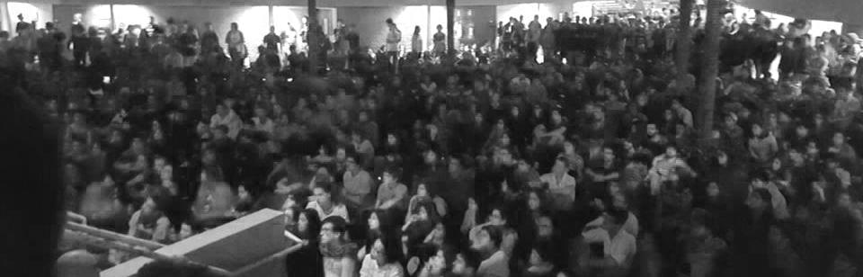

Olá Mundo!
Prefácio
Bem-vinde!
Este é o Manual de Ingressante do CACo, o Centro Acadêmico da Computação. Você deve estar recebendo ele nos primeiros dias ou semanas de aula. Nós trabalhamos muito para que as informações aqui presentes sejam úteis, e queremos ouvir de você seu feedback sobre este material.
Devido ao contexto de pandemia e distanciamento social, foi realizada uma adaptação para que fosse possível e mais agradável acessar ele de forma web. Geralmente você receberia o manual impresso, mas nos adaptamos e esperamos que você goste!
As principais ideias do manual são: atualizar você sobre as questões que mais impactam a sua permanência na universidade e a convivência do dia a dia; contextualizar a situação geral da universidade pública e do nosso ramo profissional de forma leve, introdutória, com informações sobre os principais fatos dos agitados anos passados, para você não chegar por aqui ~boiando~ perdide; tornar sua leitura mais atrativa e agradável, através de um texto simples!
Para isso, rompemos algumas tradições de um tempo atrás: deixamos de usar LaTeX para diagramação (você ainda vai compilar documentos nessa linguagem) e, com isso, alteramos a atualização de texto através do github, plataforma de programação. Nem tudo ficou como gostaríamos, portanto, deixamos espaço, também, para futuras revisões do manual que o aperfeiçoem cada vez mais: reformulado sempre o conteúdo e deixando ele sempre atualizado.
Sobre o gênero dos substantivos neste manual
Você ex-vestibulande (aleluia!), humane do século XXI, certamente está antenade na lutas sociais que acontecem à sua volta, e uma delas é a da igualdade de gêneros. Ela se baseia no respeito e inclusão de todos os gêneros, de forma que todes tenham os mesmos direitos em nossa sociedade - inclusive o direito a ser corretamente representade.
Infelizmente, nosso idioma não foi feito com isso em mente. Isso acabou gerando discrepâncias como a regra ortográfica irracional (e machista) de que, havendo 1 homem num grupo de 100 mulheres, deve(ría)mos nos referir às 100 mulheres e 1 homem como "eles". Por esse motivo, utilizamos em nosso manual uma linguagem diferente, centrada nos artigos femininos ou, quando possível, colocando artigos feminino e masculino na mesma palavra. Ainda há a variação utilizando "e", como gênero neutro.
Como estamos acostumados ao português "padrão" e o manual passou por uma grande reformulação, talvez você encontre lugares onde o texto não segue essa ideia. Se isso acontecer, nos envie uma solicitação para alterarmos o texto, isso ajuda o manual a ficar melhor para todo mundo.
Vale enfatizar que a gente não liga para suas características a não ser para valorizá-las: nós, o seu Centro Acadêmico, estamos aqui para você, independentemente de quem seja.
Esperamos que goste!
Mensagem da FEEC
Prezados ingressantes do curso de Engenharia da Computação, parabéns pela sua conquista! É com muita alegria que lhes acolhemos na Unicamp e, em especial, na Faculdade de Engenharia Elétrica e de Computação (FEEC). A vida universitária é uma fase muito especial de nossas vidas: alguns poucos anos, tão intensos quanto breves, mas que costumam ser determinantes para nossas escolhas, para que forjemos nosso modo de agir, pensar e ver o mundo. Nesta carta de boas-vindas, gostaria de lhes falar brevemente sobre alguns temas que considero importante para vocês: dar-lhes a conhecer um pouco da FEEC e de sua história; comentar sobre o excelente curso que agora começam; e tecer algumas reflexões sobre a expectativa que a sociedade coloca nas pessoas que, como nós, temos ou tivemos o privilégio de fazer um curso de excelência numa universidade pública da qualidade da Unicamp.
Pode-se dizer que a FEEC começou oficialmente suas atividades acadêmicas no início de 1967, quando ingressou a primeira turma de Engenharia Elétrica da Unicamp. Desde então, nossa Escola cresceu em pessoal, recursos e prestígio, consolidando-se como referência e liderança, tanto no ensino de graduação como de pós-graduação, ambos fortemente alicerçados na excelência de nossa atividade em pesquisa.
Temos a felicidade de poder contar com um corpo docente de primeira linha, no qual convivem, em sinergia, a experiência de vários professores que praticamente começaram a FEEC com o dinamismo de jovens docentes, recentemente contratados. Contamos com funcionários dedicados e comprometidos, alguns dos quais especialmente envolvidos com o ensino de graduação. Temos também uma infraestrutura que, embora constantemente necessitada de melhorias, lhes dará condições adequadas de estudo, tanto teórico como em laboratório. Mas, sobretudo, sabemos que contamos com os melhores estudantes. A partir de agora, vocês também fazem parte do principal patrimônio de nossa Faculdade, que é nosso corpo discente.
O curso de Engenharia de Computação teve início em 1990, surgindo como uma consequência natural do bom nível de atividades que já realizávamos, à época, nesta área, e das necessidades de mercado de uma sociedade que começava a orientar-se intensamente para as tecnologias digitais.
É um curso que já nasceu com o selo da excelência e da exigência. Compartilhamos este curso com os colegas do Instituto de Computação (IC) da Unicamp, unidade de ensino e pesquisa do mais alto prestígio, na qual vocês também encontrarão um corpo docente extremamente qualificado. Como as demais engenharias, é um curso que requer uma base forte de matemática e física. É importante aproveitar ao máximo esses primeiros semestres de curso básico, sem se deixar abater por dificuldades que são naturais, sem perder o "brilho nos olhos" desses primeiros dias de Unicamp. Problemas sempre existem e os professores, os coordenadores de curso, assim como a Diretoria, tanto da FEEC como do IC, estarão sempre à disposição de vocês, prontos para ouvir e remediar qualquer situação que possa lhes afetar. Na FEEC vocês podem contar também com o apoio específico do "Espaço de Acolhimento ao Estudante" (EAE-FEEC); informem-se com a coordenação de curso ou com seus colegas veteranos. A Engenharia de Computação é um curso exigente, mas também intelectualmente estimulante e bem estruturado. Não deixem de colocar todo o esforço, e acudir às ajudas que forem necessárias, para levá-lo a termo com sucesso e motivação constante
Juntamente com os estudos, vocês descobrirão a vida universitária. A Universidade é também um lugar de cultura e de debates e, sobretudo, oferece oportunidades únicas para se fazer amizades para a vida. Desejo que aproveitem muito bem cada instante de convivência, que participem com empenho e alegria das atividades e das entidades estudantis, nas quais vocês descobrirão um imenso leque de opções para contribuir com a universidade e, a partir dela, com o país. Mas desejo igualmente que não percam o foco no essencial, que é a própria formação, de modo a não deixar arrefecer seus ideais, nem frustrar as expectativas que agora não são só de seus familiares, mas de toda a sociedade. A universidade pública passa por momentos difíceis e é preciso que toda a comunidade universitária tenha consciência, tanto de seu papel histórico fundamental como de sua importância estratégica para o futuro do país. Nossas atividades, gratuitas e de excelência, se sustentam graças ao trabalho de milhões de cidadãos. A sociedade tem direito a nos cobrar sempre mais eficiência, dedicação e qualidade; mas deve também estar honestamente informada do tanto que aqui se faz em prol da formação das pessoas, do progresso das ciências e da tecnologia, do fomento às artes e à cultura. Continuar correspondendo, cada vez melhor, às expectativas dos cidadãos é tarefa essencial dos gestores e professores, mas também dos estudantes, cujo comprometimento ético deve se pautar pela dedicação ao aprendizado e por fomentar o desejo de saber sempre mais, qualificando-se assim para, no futuro, por meio de seu trabalho profissional, dar o justo retorno a quem nos financia.
Eu termino com uma citação que gosto muito, é de um autor clássico da antiguidade grega, Píndaro, que num de seus versos dizia: "torna-te aquilo que tu és". É um chamado do poeta para que o leitor tome consciência de quem é, de aonde está, e saia assim de um possível momento de alienação ou prostração. Vocês são hoje estudantes ingressantes do curso de Engenharia de Computação da Unicamp. Não é pouca coisa! São certamente orgulho para seus familiares e agora para nós também. Desejo sinceramente que tenham esta realidade sempre presente ao longo dos anos em que estiverem aqui. Sejam bem-vindes à FEEC e, sobretudo, sejam muito felizes aqui conosco.
João Marcos Travassos Romano - Ex-diretor
José Alexandre Diniz - Diretor
Mensagem do IC
O Instituto de Computação da Unicamp tem origens que remontam a 1969, quando foi criado na UNICAMP um curso de Bacharelado em Ciência da Computação. Primeiro do gênero no Brasil, o curso serviu de modelo para inúmeros outros programas no país.
Referência acadêmica por sua contribuição ao ensino e à pesquisa, o Instituto já foi responsável pela formação de milhares de alunos entre graduação e pós-graduação.
A produção científica de ponta do Instituto se reflete em diferentes contribuições à sociedade desde publicações de alto impacto, parcerias com instituições públicas e privadas, com a indústria, patentes e licenciamentos e, principalmente, formação de recursos humanos de alta qualidade que encontram posições de destaque em diferentes segmentos do mercado.
Atuando sempre na fronteira do conhecimento, o ambiente propício do Instituto de Computação fortaleceu a veia empreendedora dos estudantes. Já são cerca de 150 empresas formadas por alunos e ex-alunos, de startups a empresas globais e até as chamadas empresas-unicórnio. Empreendedores que colaboram diretamente com a formação das gerações seguintes criando, assim, uma cultura de inovação e empreendedorismo.
Contamos hoje com 48 professores atuando em diferentes áreas da Ciência da Computação. Temos treze laboratórios de Pesquisa que abrigam projetos de inovação e disrupção em colaboração com a indústria e diversas instituições. São mais de R$ 50 milhões em projetos em andamento. Tais investimentos dão retorno gerando conhecimento, publicações, novas tecnologias ao mercado e diversos reconhecimentos internacionais para o instituto.
Com infraestrutura de ponta, professores, funcionários e alunos engajados e atuando na fronteira do conhecimento, o Instituto de Computação é hoje um ambiente ideal para a busca do conhecimento, inovação e disrupção.
Agora você é parte de TODA ESSA história! Seja bem-vinde e vamos explorar juntos a fronteira do conhecimento!
Prof. Dr. Anderson Rocha - Diretor
Prof. Dr. Leandro Villas - Diretor Associado
"Os melhores anos da sua vida"
Parabéns!
Entrar na Universidade e cursar o ensino superior traz algumas das experiências mais interessantes. Uma delas é aprender profundamente uma especialização numa área do conhecimento, junto a cientistas e profissionais que sabem muito bem - ou até mesmo descobriram - os assuntos que estão ensinando.
Nunca é tarde para estudar. Mas isso é algo que muites de nós, quando temos a oportunidade, agarramos ainda jovens, e aí… tudo fica misturado: a entrada no mundo adulto, relações mais marcantes entre colegas e amigues, dezenas de convites para festas por mês (ao menos nos bons tempos antes da pandemia, mas um dia você ainda vai poder ver a venda de ingressos na porta do Bandejão), responsabilidades crescentes e o famoso boleto (se você nunca pagou um, em breve vai começar a pagar).
O peso dessas responsabilidades e do estudo, assim como as deficiências e exigências da própria universidade podem impactar nossa saúde mental - um tema que está sendo cada vez mais discutido e que incluímos neste manual para você poder começar o curso mais tranquile :)
Mas muito mais do que estudar, aqui você também vai encontrar toda uma rodada de atividades extras incríveis, para todos os gostos: de grupos de estudo a redes de apoio, times de esportes e e-sports, atléticas, empresas juniores e o seu centro acadêmico (olá!). São atividades que vão elevar o significado desses anos a muito mais do que aulas, provas, livros e exercícios, e através delas talvez você encontre amizades que podem durar a vida toda.
Entrar numa universidade internacionalmente conceituada, como a Unicamp, tem ainda mais desdobramentos. Suas atividades cotidianas poderão ter um impacto tremendamente grande lá fora!
Primeiro, porque nossa universidade é pública. Isso significa que você é ume des pouques que a população brasileira conseguiu colocar pra dentro de um ensino superior de qualidade que não ensina apenas uma nova profissão, mas produz ciência. De fato, Unicamp, USP e Unesp produzem juntas 1/3 da ciência do nosso país. Não por acaso, a poucos quilômetros do campus fica o Sírius, um acelerador de partículas de padrão mundial! Por esses motivos, pelo nosso trabalho científico e de nossos colegas, podemos nos orgulhar do retorno que damos à sociedade através da nossa atuação profissional, fazendo o peso do nome Unicamp valer muito mais do que um diploma na parede ;)
Segundo, porque todas as universidades públicas estão em disputa e sofrendo ataques, com constantes tentativas de descredibilização e precarização. Você certamente ficou sabendo dos cortes de verbas bilionários que afetaram as universidades federais por motivos de "balbúrdia", de acordo com o ex-ministro da Educação, Abraham Weintraub. Recentemente, com a pandemia e o aprofundamento da crise econômica, os ataques têm sido cada vez mais intensos e o ensino superior tem sofrido de uma crise orçamentária em níveis nacionais.
A Unicamp não é uma bolha: tudo isso tem consequências aqui. Sofremos cortes de verbas; há muita terceirização, o que diminui a qualidade do serviço e as condições de trabalho e sustento dos funcionários; faltam vagas na moradia estudantil e bolsas para estudantes mais pobres. Essas são questões fundamentais que você vai conhecer mais adiante neste manual e no seu dia a dia.
O fato concreto é que a universidade pública precisa que você a defenda, como parte de sua jornada por aqui. A ciência e a educação são grandes patrimônios do nosso povo, e somos nós os responsáveis por zelar por elas. Aproveite esta oportunidade para cumprir o seu melhor papel.
Por tudo isso, bem-vinde. "Os melhores anos da sua vida" serão aquilo que você e o que aparecer pelo seu caminho fizerem deles. Caminho é o que não vai faltar; nele, você pode contar com a gente, para o que der e vier.
Sobre a Capa do Manual
O tema escolhido, em vista do cenário pandêmico e do que acreditamos ser o sentimento geral dos estudantes, foi:
"Apesar do EaD"
Inspirado na clássica canção do Chico Buarque "Apesar de você", o tema olha para o difícil momento da pandemia com toda a crueza necessária, mas sem abaixar a cabeça. Além disso, a referência também é interessante porque o cenário político atual insiste em replicar alguns aspectos daquele que a música crítica.
Com um número crescente de mortes, o aumento nos preços das compras mais básicas e necessárias, a instabilidade psicológica, profissional e financeira, além do medo de que nós ou nossos entes queridos sejam infectados, temos que cuidar de nós, dos outros, do nosso trabalho e, ainda por cima, da faculdade, com um EaD implementado às pressas que busca fingir que nada está acontecendo. Com o peso das matérias e a intransigência de docentes, diante de nossas incansáveis lutas, nos deparamos com nossos limites e, em muitas conversas, percebemos uma falta de perspectiva generalizada.
O tom negativo das conversas nos levou a optar por uma mudança de paradigma, em que a cada "devido a" construímos um "apesar de". Não no sentido de ver um "lado bom" das coisas, isso seria desrespeitoso e, sinceramente, delirante ou impossível. Abraçamos nossa concepção de que o Centro Acadêmico é um instrumento de construção do futuro e que nós somos agentes dessas lutas que o constroem. Nosso "apesar de" quer romper com o anticientificismo, o genocídio e a carnificina, quer romper com a neutralidade e com esse atitude de fingir que nada está acontecendo, quer romper com as atitudes deliberadas de manutenção da pandemia e das mortes, da recusa na compra de vacinas, nas ameaças de uma nova ditadura. Porque o nosso "apesar de" é de uma positividade consciente, como na letra de Chico em que "apesar de" toda uma situação inegavelmente calamitosa como a nossa, "amanhã há de ser outro dia", e esse amanhã quem constrói somos nós, com a memória que esse momento nos trouxe e a raiva que esse momento nos deu.
Por isso, apesar do EaD que nos debilita, apesar do EaD que não nos dá descanso, apesar do EaD que tenta tirar a nossa atenção do genocídio em curso, estamos vivos - amedrontados, em luto, mas vivos - e com a consciência de que nosso futuro cabe a nós.
A arte da capa desse ano foi idealizada e realizada pela estudante Camila Porfírio - RA 195334 - Ingressante no Curso de Ciência da Computação 2018 (CC18)
Especial: EaD
O ano de 2021 começou e, com ele, logo veio o pior momento até então registrado da pandemia no Brasil. Devemos ficar em casa o tanto quanto for possível para nos protegermos e protegermos às demais pessoas. Na universidade, estamos sob o regime do Ensino Remoto Emergencial (ERE), popularmente chamado de EaD, que não é um termo correto, uma vez que o Ensino à Distância é uma modalidade pedagógica estudada, desenvolvida e sistematizada que não se assemelha ao ERE. Ainda assim, usaremos o termo popular aqui.
O EaD foi implementado às pressas, sem preparos e com diversos problemas, isso sem nem levar em conta as dificuldades de acessibilidade que foram desconsideradas quando ele foi imposto. Por mais que seja importante que o estudo continue, o EaD representou mais uma pressão, mais um peso psicológico bem grande na consciência de quem já está lidando com a pandemia e o isolamento social, junto com a caótica situação econômica e política do nosso país. Logo, sabendo que a forma da nossa educação está muito longe do ideal e que ela está, sim, representando um grande peso para nós, fica claro que sobreviver ao EaD não é uma tarefa trivial, por isso, preparamos o Mini-manual do estudante à distância!
Lição 1: Video Speed Controller
Podemos encontrar alguns estudos de neurologistas sobre o tempo máximo que deveria durar uma aula e o tempo de atenção que as pessoas têm e, surpreendentemente, a grande maioria desses estudos não apontam tempos maiores que 40, 50, 60 minutos. No EaD então nem se fala, a gente sente na pele como é muito mais difícil separarmos esse tempo em casa quando temos mais distrações, interrupções e obrigações.
Ainda assim, tem docentes aí que continuam gravando 2 horas de aula e publicando para que a gente assista quando tiver tempo, e isso está longe de ser ideal! Por isso, nossa primeira dica é: baixe uma extensão que te permita acelerar vídeos o quanto você quiser, como a Video Speed Controller, disponível pra Chrome e Firefox. Assim você pode acelerar as aulas para se adequarem ao seu tempo e conforto
Além disso, também é possível utilizar extensões como Skip Silence no Google Chrome (ou Chromium, alternativa open source) para pular automaticamente partes que o professor gasta muito tempo pensando ou esperando.
Lição 2: Grupo de amizade
Tenha sempre um grupo de pessoas em quem você confia e se sente confortável e que façam a tarefa junto com você! Isso ajuda muito quando você tem alguma dúvida e não quer perguntar nos grupos de matéria ou no Discord. Dá pra trocar todo tipo de informação útil pra matéria e resolverem exercícios em conjunto!
Justamente com esse objetivo, o CACo criou o servidor Corredores do IC (Para entrar, nos envie uma mensagem, ele é fechado à alunes da comp). Toda vez que você tiver uma dúvida ou quiser se sentir acolhida, dá uma coladinha lá, temos certeza que encontrará muito carinho lá.
Lição 3: Como desmontar a educação para ganhar menos
Por acaso o governador está te pressionando pra cortar gastos e você não consegue dizer não? Calma, a gente tem uma solução bem simples pra isso e que quase não tem contraindicações: sucateie a educação da sua universidade! Não custa quase nada, só a produção científica e a educação de qualidade, a saúde mental e preparo acadêmico de estudantes, a posição de referência científica e a autonomia universitária!
Se interessou? Então olha como é fácil fazer:
- Fique anos sem cobrar nem mobilizar a comunidade em relação ao fato de que o governo não repassa o orçamento prometido
- Jamais mobilize sua comunidade em torno de um orçamento responsável e absoluto e não relativo a uma porcentagem da arrecadação do estado!
- Também não denuncie a isenção fiscal dada pelo governo e sua tolerância com sonegação de impostos de grandes empresas que diminuem a arrecadação do Estado e, consequentemente, o repasse de verbas
- Aplique os cortes, reformas e ataques do governo sobre a sua universidade sem dó
- Deixe a crise orçamentária continuar crescendo, tolere super-salários enquanto interrompe contratação de professores
- Deixe a iniciativa privada adentrar cada vez mais profundamente dentro da universidade, substituindo orçamentos que deveriam ser públicos para aumentar a dependência. Enquanto isso, permita que essa iniciativa privada dite o que pode ser pesquisado, quem pode pesquisar, o quanto essa pessoa pode publicar da pesquisa, quando ela vai ser interrompida (e, com isso, quando essa pessoa vai perder sua bolsa e sua pós-graduação) e, no final, ainda fique com a patente
- Corte mais um pouco pra dar mais espaço pra iniciativa privada usar a estrutura de pesquisa e ensino públicos para lucrar sem dar retorno pra sociedade. Lugares recomendados pra se cortar aqui: cursos de pós-graduação (pode substituir por mensalidades), bolsas de permanência estudantil (pra deixar a universidade bem inacessível mesmo), construção de prédios dos institutos (aqui você pode estimular que as empresas doem dinheiro de construção em troca de favores a serem discutidos em segredo)
- Arme uma comissão para estudar a viabilidade da implementação de EaD permanente na universidade
- Espere uma pandemia forçar a interrupção das aulas presenciais
- Implemente às pressas e na base da força um EaD rudimentar durante a pandemia
- Espere a comissão entregar o relatório final que abre a possibilidade de implementação de ensino híbrido
Pronto! Agora você tem uma universidade sucateada que aposenta professores e não contrata novos e que faz distribuição massiva de aulas gravadas sem preparo técnico de professores para a modalidade EaD. Dentro de todo esse processo você precisa desmobilizar e até mesmo processar e perseguir membros da sua comunidade que se posicionarem contra! Assim fica mais fácil pro governo continuar cortando, a nossa pesquisa continuar diminuindo, o nosso país continuar produzindo cada vez menos ciência pra que ele fique bem dependente dos outros países e do mercado financeiro internacional. E o melhor de tudo? Você ainda pode argumentar que está seguindo a constituição porque continua fornecendo "educação".
Lição 4: E se eu tiver problemas com quem estiver me dando aula?
Muitos professores não são conhecidos por serem as pessoas mais compreensíveis do mundo. Problemas com eles são comuns: desde cobrança de presença durante a pandemia (contra as regras) até conflitos mais explosivos. O CA e a Secretaria de Graduação servem para mediar esses eventos.
Quaisquer problemas desse tipo devem ser discutidos entre a turma, com a elaboração de uma boa explicação que pode ser apresentada para o CA e/ou a Secretaria de Graduação para que as medidas devidas sejam tomadas sem o risco de exposição das vítimas
Sobrevivendo na Unicamp
A palavra é permanência
A ideia é simples: agora que você entrou na universidade, não vá embora tão cedo (e sem diploma). Você precisa permanecer. Isso envolve uma porção de fatores e necessidades diferentes para cada estudante.
Se você têm o que comer e onde morar: permanência. Sua estabilidade emocional e saúde mental: permanência. Se consegue se locomover até a universidade (e onde mais estiver obrigado a estudar): permanência. Se tem acesso aos livros, conteúdos, softwares, computadores, equipamentos, sistema de saúde (vai que você fica doente?): é tudo permanência.
Qualquer um desses pilares, se cair, pode te deixar numa situação extremamente vulnerável e até mesmo forçar a evasão da graduação, afinal de contas tudo isso impacta diretamente no seu desempenho acadêmico e sua capacidade de cumprir com o currículo. Mas como faz para garantir tudo isso?
Dois modelos de universidade
Um jeito é o "se vira". Para estudantes com famílias economicamente mais bem estruturadas, é razoavelmente simples garantir tudo isso: pais pagam o aluguel; o bandejão é pagável mas você nem precisa dele; pode pagar os próprios livros e você tem seu computador. Esse é o modelo mais "se vira" possível, e quem não conseguir se virar que procure uma bolsa. Parece coisa de universidade particular, não é? Um dos lugares onde a política do "se vira" é a norma são países onde a Educação Pública é toda privatizada, como os EUA(1). Os estudantes acumulam, hoje, US$ 1.5 trilhão1 em dívidas para pagar despesas com a faculdade. A calamidade é tanta que há estudantes morando dentro de carros para não perder a vaga em universidades prestigiadas(2) - o que para alguns pode ser visto como mais uma "história de superação", é a realidade dura de milhares de estudantes.
(1) Student Loan Debt Statistics In 2019: A $1.5 Trillion Crisis. Forbes, 2019. (2) Number of Homeless Students Soars. US News, 2019.A maioria dos estudantes depende de alguma coisa que se encaixa como política de permanência. Se você parar pra pensar, seria cada vez mais difícil você continuar estudando, por pelo menos cinco anos, se tivesse que gastar R$ 25 por dia com refeições, mais R$ 1000 por semestre com livros, mais R$ 1100 numa kitnet, mais R$ 500 com contas...
Por isso a enorme maioria dos estudantes utiliza bandejões (com o valor subsidiado, custa R$ 6 para almoçar e jantar), bibliotecas, vive em residências compartilhadas e usa a wifi do campus com muito gosto (quando ela pega) - mesmo sem ter uma algum tipo de bolsa de permanência, você também vai usufruir dessas políticas.
Mas nós vivemos num país que, apesar de inúmeras riquezas, tem uma população pobre, e muita gente depende de muitas coisas da política de permanência.
A universidade pública, que além de ser de qualidade tem a missão de democratizar o conhecimento, tem uma dívida com a população trabalhadora que a financia (veja Como Funciona a Universidade). Mesmo assim, não muito tempo atrás, mesmo que alguns estudantes pobres entrassem, só conseguia permanecer aqui quem podia "se virar".
O outro jeito de garantir permanência é que os (não poucos) impostos pagos financiem o cumprimento do direito irrestrito e constitucional à Educação aos estudantes que, como a maior parte do povo, não podem pagar. Mesmo que o investimento tenha que aumentar, é claro que o retorno trazido por um profissional de ponta à sociedade mais do que paga esse investimento em um período razoavelmente reduzido de tempo.
Os resultados são tão bons e o investimento em permanência é tão necessário que as próprias universidades públicas entenderam que, se não gastarem um tostão em permanência, vão acabar atingindo níveis gigantescos de evasão. Mais do que isso: quando não há permanência, o drama social é tão generalizado que, como você verá abaixo na luta pela moradia, as lutas estudantis tomam proporções gigantes. Com o aumento das vagas, o movimento de cursinhos populares e a política de cotas sociais e étnico-raciais, sobretudo após a redemocratização do país, mais e mais estudantes de origem pobre passaram a ter acesso à universidade e lutaram pesado, bravamente, para estender as políticas de permanência estudantil e garantir que a universidade incorpore a sociedade que a financia.
O Sistema de Bibliotecas da Unicamp te dá acesso à maioria dos livros e artigos que você desejar, sem pagar nada por isso! Só não deixe para pegar os livros das matérias na última hora, pois nem sempre há exemplares suficientes para todos os alunos.Bandejão, bandeco, bandex
A universidade, após sua fundação, passou 10 anos sem ter bandejão. O primeiro foi o RU; em seguida, um prédio que pertencia ao CABS (Centro Acadêmico Bernardo Sayão S2, da Engenharia Elétrica) foi convertido no RA, perto da FEEC; depois foi construído o RS, mais moderno. Hoje todos os campi da universidade têm acesso a bandejões, inclusive os colégios técnicos (COTUCA em Campinas e COTIL em Limeira).
O preço das refeições (que era R$ 2 e agora é R$ 3) é subsidiado e, sem ele, cada estudante teria que viver na base da marmita (passando maus bocados para ter tempo para cozinhar) ou pagar o preço comercial de todas as refeições, todo dia - chutando baixo uns R$ 25, o que dá R$ 550 ao mês sem os finais de semana. A abertura de café da manhã tem menos de 5 anos, e é uma reivindicação quase tão antiga quanto a abertura nos finais de semana - uma pauta importantíssima para quem não pode voltar pra casa da família nos fins de semana e tem que se virar para se bancar, mas que ainda não conseguimos :( Você tem mais informações sobre o funcionamento dos bandejões, que têm alimentação vegetariana desde 2013, na seção Comer na Unicamp deste manual.
Orientação Jurídica Gratuita
O SAE, Serviço de Apoio ao Estudante, oferece orientação jurídica gratuita para uma porção de casos, não necessariamente relacionados à universidade ou vida acadêmica: o serviço está aí justamente para orientar estudantes nas questões pessoais pelas quais a gente pode passar.
Direito Civil: contratos em geral; contratos de locação; acidentes de trânsito; ação revisional de aluguel; divórcio; pensão; etc
Direito Penal: violência contra a pessoa; lesões corporais; furto; roubo etc.
Direito do Trabalho: caracterização de relação de emprego para não registradas/os e direitos trabalhistas em geral (CLT). Basta se dirigir pessoalmente ao SAE, cujo endereço está no final desta seção ;)
Moradia: luta e disputa
Texto adaptado, atualizado e ampliado do site do Cêntro Acadêmico do IEL (CAL).Em 1986 foi organizado o movimento estudantil TABA: sem ter onde morar, 60 estudantes ocuparam salas do CB por mais de dois anos, reivindicando uma moradia gratuita aos estudantes de baixa-renda. Essa ocupação estudantil ficou conhecida como "A Taba", em referência a tabas indígenas que eram caracterizadas por uma cultura de coletividade.
O reitor da época, Paulo Renato Costa Souza, prometeu que 1.500 vagas – correspondente a cerca de 10% do total de estudantes daquela época – seriam entregues até o mês de julho de 1989 e, no caso de não cumprimento das cláusulas que garantiam a construção da moradia, ele assinou um documento que autorizava o DCE Unicamp a ocupar novamente o campus, assim como o Movimento TABA havia feito. Em 1990, a Moradia foi inaugurada com novecentas e quatro vagas, já abaixo do prometido.
Na greve de 2016, os estudantes reivindicaram a expansão das vagas e conseguiram que o reitor José Tadeu Jorge assinasse um documento que a garantisse. Com o fim da greve, criaram-se grupos de trabalho (GTs) para analisar e avaliar a ampliação e os programas de permanência estudantil da universidade. Eventualmente os GTs foram dissolvidos e o terreno, que estava em processo de compra, ficou embargado em cartórios. Finalmente, membros da administração central da universidade admitiram em reunião com membros do movimento estudantil que a nova moradia "não vai sair".
Além disso, há diversos problemas na infraestrutura que indicam uma falta de manutenção generalizada, como estruturas que foram evacuadas sob perigo de desmoronamento; problemas elétricos, de drenagem nas ruas e de infiltração de água nas casas; dificuldades na separação do lixo reciclável; e vazamentos. Há muitos casos de superlotação, com casas abrigando até sete estudantes, e vários casos de furto, principalmente de bicicletas dos moradores.
1. Vista aérea da moradia; 2. Ocupação da moradia em 2011 exige a construção de 3000 vagas para cobrir o déficit;A moradia estudantil digna é um espaço determinante para a garantia da democracia no acesso e permanência no Ensino Superior - incluindo os campi que sequer têm programa de moradia estudantil, em Piracicaba e em Limeira.
Por fim, há uma disputa de projeto sobre a moradia: ao invés de construir mais casas, a reitoria tem "investido" na "Bolsa Moradia" - um valor de cerca de R$ 400 pago a estudantes para se manterem em repúblicas. O impacto na organização estudantil é enorme, pois os bolsistas estão pulverizados e não têm um espaço para se encontrar e auto-organizar, caso precisem defender sua pauta.
Os milhões de reais por ano vão pelos ares em aluguéis que em pouco tempo poderiam arcar com a construção de uma moradia inteira. Crises financeiras cada vez mais constantes - lembre-se que ainda estamos vivendo a "crise de 2008" - podem pôr em xeque essas bolsas, o que não ocorreria numa moradia construída. O tiro cego da reitoria acerta, contudo, o mesmo alvo: a especulação imobiliária de Barão, que só tem a agradecer.
 Assembleia de 1200 estudantes em 2016 tomou o CB e lançou greve estudantil por cotas, contra cortes de verbas e pela construção de uma nova moradia.O que você não viu
- 1986. Sem ter onde morar, estudantes estabelecem o movimento TABA e acampam no CB até a conclusão da construção da moradia.
- 2016. Greve estudantil (foto) é lançada e dura 5 meses, ocupando a reitoria;
- 2017. Longa sessão do CONSU aprova cotas étnico-raciais e sociais, diante de um ato com mais de 600 pessoas.
- 2019. Os primeiros estudantes cotistas entram na universidade. Estudantes organizam uma rede de apoio solidário para viabilizar que indígenas e cotistas tenham condições suficientes para se estabelecer nas primeiras semanas, o que ocorreu também em 2020.
Inscrição bolsas
Inscrição para bolsas Todas as bolsas abaixo são centralizadas pelo SAE, Serviço de Apoio ao Estudante, órgão oficial da universidade. Você tem cerca de uma semana para se inscrever, então não perca o prazo!
- BITA: Isenção liara Alimentação
- BAS: Bolsa Auxílio-Social
- BAEF: Bolsa Estudo Formação
- BAT: Bolsa Alimentação/Transliorte
- BAI: Bolsa Instalação (Calouros)
- Bolsa Moradia Estudantil
- Moradia Estudantil
- Bolsa Emergência, cedida uma vez só em caso graves que colocam a permanência do/a estudante em risco.
Mais informações:
www.sae.unicamp.br
R. Sérgio B. de Holanda, 251. Mesmo prédio do SAPPE e CLE, ao lado do Bandejão.
Há também bolsas acadêmicas como a Iniciação Científica, na seção Vida Acadêmica.
Cuidando da sua saúde
CECOM Centro de Saúde da Comunidade
A CSS, Coordenadoria de Serviços Sociais, é responsável pelo planejamento e execução de programas de saúde voltados à comunidade universitária da Unicamp – alunas, alunos, funcionárias, funcionários e docentes.
Em português, isso quer dizer que é um "plano de saúde" da Unicamp. Demora um pouco (embora o pronto-socorro do CECOM seja bem rápido), mas funciona. Você pode marcar consultas médicas e fazer exames. O CECOM é localizado próximo ao HC. Para ir, é melhor pegar o circular pois é beeem longe. De circular interno, peça para descer no CECOM. É o ponto final ou o penúltimo dos circulares.
Fique de olho na sua caixa de entrada perto do período de inverno, pois o CECOM costuma disponibilizar vacina contra gripe gratuitamente - uma dose em clínica particular é bem cara, vida longa o sistema público de saúde.
Outra coisa que você não pode perder no CECOM são os testes de ISTs (infecções sexualmente transmissíveis). O teste cobre várias ISTs, inclusive o HIV, e o resultado sai na hora. É necessário agendar, exceto se você tiver tido exposição a alguma IST.
Caso você tenha Unimed, o Centro Médico, que fica perto da Unicamp, atende pela Unimed. É mais rápido que o atendimento da Unicamp (CECOM ou SUS).
Para marcar consultas com dentista, vá ao CECOM e pergunte onde que é. Isso é mais fácil que você tentar entender lendo aqui. Basicamente é embaixo do CECOM, muito fácil de chegar se alguém apontar com e dedo e disser "ali".
Funciona muito bem, e o atendimento já começa com uma palestra instruindo como cuidar bem da boca no dia a dia (afinal, a melhor saúde é a preventiva). Mas se você estiver com dores, te atendem na hora sem marcar consulta nem assistir palestra.
Veja todas as informações sobre atendimento e contato no site do CECOM:
www.cecom.unicamp.br Vista do Hospital das Clínicas e entrada do CECOM.Hemocentro
O Hemocentro é para você doar sangue. Como o Hospital das Clínicas atende todo o estado de São Paulo (e além) e tem fácil acesso a rodovias, o Hemocentro é um banco de sangue relevante para toda a saúde pública.
Também organiza um centro de doação itinerante num ônibus adaptado que fica pelo campus e pela cidade de Campinas.
Acesse o site para mais informações:
www.hemocentro.unicamp.br… mental!
Vamo lançar a braba pra você: na faculdade, a gente tem muita coisa boa e muita coisa ruim também. Pronto, falamos, nada é perfeito. Mas pela relevância que o curso toma nas nossas vidas, isso tem um peso que pode acarretar vários efeitos psicológicos na gente.
Levantamentos demonstram altos índices de estresse, ansiedade e até depressão na pós-graduação. Calma, você está lendo o manual certo: é que muitos dos fatores que tornam o ambiente acadêmico insalubre na pós também estão presentes na graduação.
Por isso, o melhor que temos a fazer é entender isso e saber o que fazer pra encarar esse problema sem sofrer demais com ele.
Estudar dá (ou é) trabalho
Ao contrário do que dizem por aí, universidade não é tudo drogas e orgias. Primeiro, porque a gente estuda, e MUITO. É uma carga imensa e, honestamente, injusta. Infelizmente, a maioria de nossos professores nas Exatas não têm formação em licenciatura nem nada em Pedagogia, o que os deixa sem ferramentas importantes para ter didática. Aí, alguns passam muita matéria e acham que, se pouca gente reprovou (você leu certo, reprovou), é porque alguma coisa está errada (pois é). Os catálogos dos cursos também têm problemas.
Assim, o risco é grande de a gente acabar com a sensação de falta de tempo, ansiedade, dificuldade de nos relacionarmos, e até mesmo sentimento de culpa quando descansamos ou nos divertimos (aquele "nossa, eu devia estar estudando"). Parece que somos incapazes por causa do alto nível das matérias, mas na verdade existe sobretudo um baixo nível do ensino, em várias áreas e institutos. Para quem já está começando a vida adulta, tem que ainda pagar contas e lidar com a distância da família, isso também acaba exercendo bastante pressão.
 Nos dias de tempestade, lembre-se: acima das
nuvens, sem falta, está o céu azul :)
Nos dias de tempestade, lembre-se: acima das
nuvens, sem falta, está o céu azul :)
Work hard, play hard?
É neste contexto que também acabamos buscando ter algum tipo de refúgio ou sensação de controle em nossas vidas. Exageramos nas redes sociais e nos viciamos nesse estilo de vida em que não prestamos muita atenção nas coisas, em meio a centenas e centenas de postagens e mensagens todos os dias.
Pode parecer interessante usar entorpecentes constantemente ou em alta quantidade, na busca de atividades que o cérebro entende como prazerosas e compensatórias. Em nenhuma dessas coisas acima você pode confiar, nenhuma. Apesar de distrair, elas não resolvem os problemas (que podem se acumular), podem acabar contribuindo para o sentimento de culpa ou mesmo tendo efeitos colaterais.
Pesa ainda o quanto a nossa cultura negligencia a saúde mental, até porque o acesso universal a psicólogos/as infelizmente não está disponível no sistema de saúde gratuito e, ainda que tentemos optar por pagar, eles são caros.
Apesar de toda essa pressão que é gerada, é nesse ambiente que também fazemos muitas amizades que são nosso suporte nos momentos difíceis e que vão superá-los com a gente. Nosso instituto também tem um ecossistema incrível de grupos e entidades extracurriculares e festas (afinal somos jovens, e precisamos de vivência) que nos ajudam a socializar e tirar a cabeça dos livros.
É sempre muito importante se lembrar de que você sempre tem apoio e que a faculdade não é e jamais deveria ser uma competição. Você tem colegas e veteranes que passam ou passaram pelas mesmas coisas e podem ajudar. Agindo com franqueza e sinceridade, buscando entender o que acontece com você e se comunicando, sem medo de pedir ajuda ou desabafar, é uma ótima forma de buscar um conforto que muitas vezes é essencial e faz toda a diferença. Lembre- -se que o sofrimento psíquico não te faz melhor ou pior, e o seu rendimento acadêmico não significa tudo na vida - aliás, nosso sistema de educação é terrivelmente falho e de forma alguma consegue dar a última palavra sobre o que uma pessoa é ou deixa de ser. E fica a dica: bitolar não é saudável!!
Por isso, não espere demais e não se negligencie. Busque sempre as coisas e pessoas que te ajudam a se fortalecer. Sempre conte com a comunidade, converse com o CACo e as demais entidades, apresente ideias, se abra (ou denuncie) sobre aquilo que te faz mal. Juntes podemos melhorar a nós e nosso entorno. O que não pudermos melhorar, lutaremos para que melhore!
SAPPE Serviço de Apoio Psicológico e Psiquiátrico
A universidade oferece serviços de assistência psicológica e psiquiátrica gratuitamente através do SAPPE, órgão ligado à Pró-Reitoria de Graduação (PRG). Ele oferece algumas modalidades de atendimento, divididas em duas principais categorias: o atendimento regular e o pronto atendimento.
O atendimento regular é um tratamento mais contínuo que é feito geralmente em quatro sessões, a menos que precise ser aumentado, de acordo com a opinião profissional. Para utilizar o serviço você deve preencher uma Ficha de Cadastro para atendimento regular de acordo com os horários disponíveis no site do SAPPE (disponível abaixo) na recepção do Serviço (endereço e instruções de chegada abaixo) e agendar a participação no Grupo de Recepção. Após a participação no grupo, você pode agendar uma Entrevista de Triagem que te encaminhará para o tratamento adequado.
Observação: O Grupo de Recepção é uma palestra que explica o funcionamento do serviço, maaaas ela parece ser montada para te desmotivar a usá-lo. Os períodos de espera entre cada etapa também podem ser bem longos e servem para esse mesmo fim. Então, se você realmente sente a necessidade de buscar esta orientação, não desista.
O SAPPE também tem pronto atendimento. Essa é uma sessão única voltada para quando você estiver passando por uma crise ou emergência, mas com os horários limitadíssimos. Nesse caso, você deve passar na sede do SAPPE nos dias e horários disponíveis no site.
Nesse cenário de pandemia e distanciamento social o SAPPE está funcionando de maneira online e divulga avisos pelo Facebook (link mais abaixo).
Mais informações:
R. Sérgio B. de Holanda, 251, 1º piso Em frente ao prédio da DAC; mesmo prédio do SAE e CLE, ao lado do Bandejão.
19 3521-6643, 3521-6644
sappeass@unicamp.br
Site SAPPEFacebook SAPPE
Como funciona a Universidade
O intuito desse bloco é deixar você sabendo um pouquinho como funciona tudo por aqui. Esperamos não te cansar com muito vocabulário, só as principais palavras mágicas que a gente ouve mais frequentemente quando alguma coisa importante é discutida ou feita. Também explicamos o orçamento, afinal é o dinheiro da universidade que mantém as coisas fluindo por aqui e, como se diz, escolhe a música que a banda toca.
Instituição
A universidade é uma autarquia pública - o que significa que é um órgão público do estado, mas muito mais independente de governos (que trocam a cada 4 anos). Portanto, tem sua própria autonomia para orçamento e contratações, realizar obras, etc.
O que garante essa independência é a chamada Autonomia Universitária, garantida pela Constituição de 1988, mas que deriva da própria origem da "universidade" como instrumento de avanço da sociedade como um todo. O famoso tripé que coordena (ou deve coordenar) o trabalho da Universidade é o seguinte:
- Ensino: formar cientistas de diversas áreas do conhecimento
- Pesquisa: orientar o trabalho desses profissionais à procura de novo conhecimento
- Extensão: retorno direto da universidade à comunidade que a sustenta, com iniciativas de impacto direto para os cidadãos e toda a sociedade. Hoje, há muitos cursos pagos (e caros) distorcendo a Extensão.
Órgãos
A entidade oficial "Unicamp" tem seus próprios órgãos de gestão e organização interna - alguns deles com representação estudantil e de funcionários administrativos, mas sempre como uma minoria (bem pequena), que é eleita para comissões de todos os níveis. Não deixe de se informar e participar! Haverá divulgações dessas eleições em vários momentos do ano. Também há, na seção Além da Graduação, as entidades estudantis auto-organizadas (que são muito mais a nossa cara).
- CONSU Conselho Universitário. Órgão colegiado composto pelo reitor, Pró-Reitores, Diretores dos Institutos e Faculdades, Professores Doutores e mais representantes de docentes. Juntos com cerca de 30% dos membros, há representantes dos demais funcionários públicos e também dos estudantes. Tem cadeiras também para a FAPESP, Prefeitura de Campinas, DIEESE e para a Federação das Indústrias (FIESP).
- Reitoria É como a "presidência" da universidade. Há um conselho de reitores das 3 estaduais, o CRUESP, cujo/a presidente entra na linha sucessória do governo do estado (chique, bem).
- Comissões Há comissões para diversos temas, em várias hierarquias. As principais são a Comissão Central de Graduação (CCG) e as comissões de dentro dos institutos.
- Institutos e Faculdades São as unidades que a gente realmente frequenta todos os dias. Têm suas próprias comissões e decisões, sempre de acordo com os órgãos superiores. A principal entidade dentro de cada instiuto é a Congregação, pela qual passam todas as decisões mais importantes, com representantes eleitos dos estudantes.
- Diretoria Acadêmica (DAC) Além do seu instituto, é o principal contato que você terá. Esteja sempre atento ao site e ao calendário da DAC. Ela centraliza a comunicação e os procedimentos dos estudantes com os outros órgãos, então lembre-se: não é o/a tiozinho/a do balcão que aceita ou nega nossos suados pedidos de matrícula, eles/as só fazem a ponte!
Quem escolhe o/a reitor/a?
A cada 3 anos há uma votação para escolher o/a reitor/a, o que faz muitos acharem que é uma eleição. Contudo, é apenas uma consulta à comunidade, em que o voto dos professores tem maior peso (70%) que o voto de funcionários e alunos. Os 3 principais candidatos mais votados nessa consulta são enviados para escolha feita oficialmente pelo Governador do Estado.
Dinheiro
Pela Constituição, Educação é um direito da sociedade, provida pelo estado, através dos (caros) impostos. Pela lei, as universidades estaduais paulistas recebem uma fatia do ICMS, um imposto sobre consumo pago sobretudo por trabalhadores comuns;
Os governos têm calculado o repasse após descontar despesas do ICMS ou ignorar pagamentos atrasados, diminuindo o bolo investido nas universidades. Um aumento para a Unicamp, prometido com a expansão em Limeira, não foi executado; o repasse total para as 3 estaduais poderia chegar a 9,57% do ICMS total.
Há batalhas judiciais e na ALESP para assegurar os 9,57% ou ampliá-los para 11%, tendo em vista o grande aumento de vagas nos últimos vários anos, e os gastos fixos da universidade, que atualmente dependem de um imposto variável. A resposta sempre é "não há dinheiro".
O governo federal apresentou às suas universidades o Future-se, programa pelo qual as universidades entregam sua administração a empresas gestoras (OSs) e investidoras de fundos.
O modelo é duramente criticado, tanto pelos casos de corrupção envolvendo OSs em concessões de hospitais públicos quanto pela extinção, na prática, da Autonomia Universitária, atacada pelo ministro da Educação.
Na esteira de outras universidades, a Unicamp passou em votação no CONSU a Política de Inovação Institucional, apelidado de "Inove-se", além de outros pacotes que vão assegurar um orçamento "extra". A regulamentação do Fundo Patrimonial da Unicamp, por exemplo, prevê que um conselho composto por investidores e membros da administração universitária gerencie recursos privados para prédios, bolsas e contratações para fins específicos escolhidos pelos gestores do fundo.
Na prática, isso significa redirecionar a estrutura universitária para objetivos que se aproximam de interesses do mercado e podem se distanciar da pesquisa de interesse público (que não necessariamente dá lucro).
O governador do estado João Doria promoveu, em 2019, na ALESP, uma CPI das Universidades para investigar "doutrinação ideológica", com deputados aliados ao governo federal. Reitores, ex-reitores e funcionários foram chamados a depor. O relatório final da CPI termina recomendando a cobrança de mensalidades. Em 2020, foi aprovada a cobrança de mensalidades na pós-graduação lato sensu após entendimento positivo do Superior Tribunal Federal quanto à legalidade disso em universidade pública.
Transporte interno
Com uma infraestrutura do porte de nossa universidade, há muitos recursos dedicados a uma rede de transporte interno dentro e fora do campus de Barão Geraldo, de graça!
O Circular Interno funciona dentro do nosso campus e tem várias rotas cobrindo os lugares mais distantes (inclusive o IC, que é longe dos outros). A partir das 18h até as 23h funciona somente o Circular Noturno, que tem a frequência bem menor e menos rotas.
Também é livre o acesso de qualquer estudante ao ônibus da Moradia, comumente utilizado por estudantes que moram lá ou em repúblicas nos arredores da Av. Santa Isabel. Basta aguardar no ponto de ônibus no bolsão de estacionamentos da Biblioteca Central, ao lado do Bandejão, e mostrar o RA. De lá também sai o Intercampi, ônibus que conecta os campi de Barão e de Limeira. O uso é limitado, e você tem que se inscrever com antecedência no site do serviço.
Você pode conferir as rotas, horários e até posição geográfica ao vivo pelo aplicativo Unicamp Serviços, que também tem várias outras coisas legais.
Além desses transportes oferecidos pela universidade, quem é de São Paulo também tem a opção de utilizar o Massa Crítica, que é particular. Ele existe para suprir a demanda de transporte entre a Unicamp e a USP e seus arredores sem passar pela rodoviária de Campinas e da capital.
O que comer na Unicamp
Bandejões
Um dos momentos de glória do dia de uma/ um futura/o engenheira/o, cientista ou bacharel é o Bandejão. É a hora de intensas e indiscutíveis emoções. Jamais tente descobrir o sabor do suco pelo paladar (caju ou manga?), é mais cômodo ler no cardápio do dia. O Bandejão é o lugar de você se encontrar com amigas e amigos (combinando antes ou não), contar os micos nas aulas, jogar conversa fora e falar mal da comida, que nem é tão ruim assim como muitos dizem - e salva o rolê pelo preço.
Eles funcionam de segunda à sexta e são bem afastados um do outro, o que torna qualquer instituto razoavelmente perto de um "bandeco", independente de onde tenha sido ou vai ser sua aula. Em períodos especiais, como férias, os restaurantes podem funcionar em horários reduzidos ou não abrirem, então fique de olho no site da prefeitura, no GDE, ou principalmente no aplicativo da Unicamp. Nessas plataformas você também pode encontrar o cardápio da semana, que conta com a famigerada carne picada pelo menos um dia.
Atualmente, o preço do café da manhã é de R$ 2,00 e do almoço e jantar é de R$ 3,00. Sem dúvida, um ótimo custo benefício, porém nem sempre foi assim: historicamente, o preço do bandejão foi de R$ 2,00. No entanto, entre 2017 e 2018, numa reunião extraordinária do Conselho Universitário, foi aprovado o aumento das refeições dos restaurantes universitários. Por mais que a inflação tenha aumentado, não tiveram reajuste equivalente as bolsas estudantis (mas elas permanecem ativas). Para saber mais, consulte a seção de permanência estudantil.
Caso seja dia de salsicha no bandejão, ou então se você já enjoou nos dois primeiros meses, existem outras opções para se alimentar dentro da Unicamp. Contudo, elas certamente não custam os mesmos R$ 3.
Cantinas
As cantinas oferecem algo mais voltado para o "lanche da tarde", ao invés de refeições completas, como salgados e bolos. No entanto, existem algumas com pratos feitos ou com self-service por quilo, saindo bem mais caro que o bandejão. Elas eram bem numerosas no passado, porém conforme suas licenças de funcionamento foram expirando, a universidade não abriu novos editais para renová-las, e ainda não se pronunciou a respeito. Por conta disso, e devido à situação da pandemia, não sabemos ao certo quantas cantinas estarão funcionando em 2021 (já foram reduzidas pelo menos à metade do número de 2017), e aquelas que ainda o estiverem correm o risco de fechar a qualquer momento. O mesmo fenômeno ocorre com as barraquinhas de impressão e xerox dos institutos.
Feirinha
Carinhosamente apelidada de "feirinha", ela ocorre na praça do Ciclo Básico às quartas e quintas (quando temos feriados, os dias mudam). A variedade de opções é imensa: existem barracas de suco, cachorro-quente, macarrão, açaí, pastel, doces, strogonoff, entre muitas outras, além de produtores de artesanato. Também há restaurantes e supermercados em Barão, veja na seção Campine-se.
Mas e na pandemia e no ead?
Sabemos que nesse momento, devido a pandemia, você não terá a oportunidade de conhecer o bandeco, as cantinas ou a feirinha, mas com certeza terá essa chance em algum momento da graduação! Segure a empolgação, que quando pudermos voltar para o campus, vamos estar todos com a energia para aproveitar.
Mantenha-se em segurança
É importante você saber que Barão Geraldo é perigoso, pra você ter a atenção dobrada em Barão Geraldo quando tiver a chance de conhecer ou morar, então se ainda não teve essa chance, se ligue!
Campus Tranquilo (in memorian)
O Campus Tranquilo era um programa de segurança do campus implementado após formulação com a comunidade acadêmica e profissionais de segurança pública como alternativa, em 2013, à tentativa da Polícia Militar de estabelecer presença permanente no campus.
O argumento é que a polícia pode cumprir um papel truculento e repressivo - sobretudo em protestos contra cortes de verbas. Afinal, mais de uma vez, na USP, funcionários e estudantes tomaram bomba de gás e foram detidos pela PM diante de votações importantes do Conselho Universitário.
Após uma decisão judicial, funcionários da FUNCAMP treinados no programa foram demitidos em massa e a universidade re-terceirizou o serviço. Os/as novos/as funcionários/as têm condições mais precárias e muito menos treinamento. O resultado é que a guarda patrimonial se tornou mais policialesca, com casos de abordagens agressivas.
O patrulhamento patrimonial continua e a maioria dos guardinhas se apresenta amigavelmente, sendo possível pedir escolta durante a noite. Também há uma ambulância em caso de emergências de saúde.
Botão de pânico
O Botão do Pânico é um app disponibilizado pela própria Unicamp, que tem como objetivo registrar situações de pânico dentro do campus. O app está disponível tanto na Play Store quanto na App Store, sendo que os credenciais para login são seu RA e a sua senha da DAC. O ideal é já fazer o download do aplicativo e fazer o login, pois numa situação de risco não haverá tempo para isso. O aplicativo utiliza sua localização para pedir emergencialmente a presença de algum responsável da segurança da Unicamp.
Grupo da Unicamp no Facebook
O grupo da Unicamp no Facebook tem vários objetivos, como integralização e diversão, no entanto também pode ser utilizado para divulgação de informações. De vez em quando rolam no grupo algumas publicações sobre uma situação de risco que ocorreu em Barão Geraldo, explicando o que aconteceu e onde especificamente aconteceu. Por isso, fique de olho!
Página Avisa As Mina
Não adianta esconder essa péssima situação: as dependências de Barão Geraldo são perigosas principalmente para mulheres, assim como todos os lugares. Para não só evitar, mas também combater situações de assédios verbal e físico, perseguição e ameaças, foi criada a página "Avisa as Minas de Barão/Unicamp" (tagueado por #AMBU), para deixar todo e qualquer tipo de aviso que você, bixete, ache importante sobre essas questões de segurança citadas. Tanto bixetes quanto veteranas tentam postar alertas o mais rápido possível, então lembre sempre de ativar para receber as notificações e mandar nos grupos de sala para que cada vez mais meninas fiquem sabendo.
Neste manual, discutiremos mais profundamente a situação da segurança das meninas no campus e em Barão Geraldo na seção Convivendo na Unicamp.
Convivendo na Unicamp! - e no mundo
Pessoas e vivências diferentes
Eai, bóra refletir sobre alguns problemas da sociedade que aparecem e impactam diretamente esse curso incrível que é a computação?
Você perceberá bem rápido que a universidade traz grandes experiências. É um espaço onde saímos da caixinha que nos formou e nos abrimos para diferentes realidades e discursos. É o contato com pessoas que tiveram vivências bem diferentes das nossas, é uma oportunidade de enxergar além do que conhecemos.
Bom, é importante ressaltar que existem pessoas com experiências mais bem aceitas na sociedade, enquanto outras passam por barreiras "invisíveis" em sua experiência até aqui e que vão continuar lidando com essas barreiras pra permanecer, se identificar e se sentir bem.
Poxa, isso é zuado demais né? Depois de passar por toda essa complicação que é o vestibular, ter ralado, tem pessoas que vão chegar e não vão sentir que pertencem a comp? É isso mesmo, infelizmente.
Então bóra lá refletir um pouco sobre isso, e nos comprometermos a pensar no assunto e tornar a comp um ambiente mais justo, igualitário e bom pra todes? Vem com a gente!
Mulheres na computação
As minas na comp são o primeiro sinal de algo não está muito certo! Você vai perceber que terá poucas mulheres em cada uma das salas da comp, não dá pra ser coincidência né?
Bom, a primeira coisa é que existe uma diferenciação de tratamento, oportunidades e situações vivenciadas quando se é mulher. Isso se dá no dia a dia, no trabalho, nas amizades e em todos os âmbitos sociais que possuímos. Dito isso, você deve imaginar que essas características também se replicam sobre quem entra na Unicamp, e se reproduzem na Unicamp, e, infelizmente, sobre o curso que você está entrando, a Computação.
Infelizmente é uma realidade, e nesta seção nós vamos te explicar um pouco sobre isso e sobre como nós vamos mudá-la.
Não é simples lidar com essa questão, porque a ideia do que as mulheres devem ou não fazer, do que elas são boas ou não, do lugar que pertence a elas ou não, é algo estabelecido e repassado há muito tempo para nós.
A comp é um curso majoritariamente composto por homens e, como é da área tecnológica, já vem vinculado com essa ideia do "ser masculino", que "é" inteligente, racional e lógico. Isto acaba refletindo nas minas de maneira negativa, como se criasse uma atmosfera onde elas não tem espaço, não se sentem parte do meio e acabam tendo experiências ruins.
A ideia de que isso é "certo" vai se enraizando sutilmente e estruturalmente em todas as pes-soas, e reproduzimos comportamentos que não entendemos o que significam e as consequências que eles trazem. Por isso viemos aqui para levantar alguns pontos e fazer você refletir sobre alguns "padrões" que já existem e que com certeza não são legais, pra criar um curso que demonstre que a computação é espaço das mulheres participarem.
O que conhecemos como mulher
Desde criança já existe um padrão em que estamos muito inseridos: meninas devem ser mais comportadas, educadas, sempre organizadas e limpas. Meninas devem se arrumar, cuidar da beleza, seguir um padrão. Mulheres estão destinadas a serem mães e a casar; correm perigo, devem sempre estar com amigos ou namorado que poderão ajudar. Para os homens é construído o imaginário inverso de liberdade, e do indivíduo que é capaz de tudo.
Parece pouca coisa, mas na verdade essas pequenas coisas vão construindo esse comportamento que é "o aceitável", "o normal", o que não vai assustar as pessoas, para ambos os grupos.
Todo mundo quer ser aceito pela sociedade, e por muito tempo reproduzimos o que ela dita. Portanto, antes mesmo de termos até mesmo um senso crítico, uma visão mais ampla da própria vida, já fomos criadas/os com tais pensamentos.
Nada disso seria ruim, se fosse apresentada uma pluralidade. Meninas que lutam, meninas briguentas, meninas que moram sozinhas, meninas independentes! Meninos que limpam, meninos que cozinhem e possuem sensibilidade. Por que aí tudo bem se, em meio a liberdade, se escolhesse ser uma menina que se arruma ou uma menina casada, porque seria uma escolha autônoma. Não somos incentivades a autonomia, a confiança, a criticidade e a liberdade - mulheres principalmente sem a liberdade de discordar e discutir de igual para igual com qualquer outra pessoa, mulher ou homem.
Sem isso, criamos um padrão raso, insatisfatório, e que além de tudo torna as mulheres coadjuvantes de suas vidas; e não só isso, faz com que os homens também não reflitam que sobre essa "liberdade" vendida, também não são donos da própria vida e não tem liberdade de serem quem gostariam de ser se isso se desvincular dessas ideias já criadas. Além de não serem estimulados a refletir sobre isso por essa ideia de "estarem por cima", o que faz com que vivam uma vida reproduzindo um comportamento que aprisiona ambos os grupos, apesar de gerar maior violência e opressão às mulheres.
Infelizmente é o que discursos como a da ministra da Mulher e Direitos Humanos, Damares Alves, vem espalhando com ideias do tipo "mulher nasce para ser mãe" e "infelizmente tem que ir para o mercado de trabalho" - como se o papel feminino se resumisse a ser mãe e não ter a chance de se desenvolver além da maternidade; e como se ser homem se resumisse a aceitar o mercado de trabalho sem mostrar insatisfação e não ter tempo para a família e vida pessoal.
A universidade reflete a sociedade
A Unicamp não é uma bolha, e tudo que acontece lá fora também acontece aqui dentro. A gente listou na próxima página algumas das situações comuns que podem ser evitadas para que você possa refletir, entender como funciona e identificar comportamentos preconceituosos que só reproduzem os problemas do machismo. Dá uma olhada!
O pior é que esses comportamentos que são impostos sobre as meninas às vezes, de fato, fazem elas acreditarem que sabem menos ou que estão com dificuldades anormais. Na maioria dos casos, isso é só a leitura de um colega de sala sobre elas, e não uma verdade. Temos que quebrar essa impressão que foi criada de que as mulheres não têm a capacidade de adaptação no espaço acadêmico, no esporte ou em qualquer outro espaço. As mulheres estão preparadas sim para todos os desafios que estão por vir, e podem se adaptar à nova rotina e se desenvolver como qualquer pessoa! A comp é delas!
Essas situações podem ser reproduzidas por qualquer pessoa diante de um grupo minoritário, e entre pessoas de grupos minoritários também. Sempre importante entendermos que estamos diante de ideias muito enraizadas e que aos poucos, refletindo sobre o assunto, podemos nos tornar mais conscientes disso e ajudar outras pessoas a serem também.
Pode isso Marta?
Coisas comuns que poderiam só acontecer menos, ou nem acontecer.
- Impressão de dificuldade. É normal se sentir perdido numa turma quando não conhecemos ninguém ou viemos de outra cidade. Mas isso é natural e não deve ser explicado por "ser menina". Portanto, não tem naaada a ver achar que as minas tem dificuldades além do normal, e não é legal os colegas se sentirem "os salvadores" por ajudarem em alguma coisa.
- Explicanismo. Loucos para se sentirem os "salvadores", alguns homens tentam explicar coisas para mulheres o tempo inteiro - até quando elas sabem mais do que eles sobre o assunto. Famoso palestrinha. Claro que se ajudar dentro da área é algo normal, e você deve fazer, mas devemos refletir se não estamos fazendo suposições e reforçando estereótipos.
- Objetificação. Diferentemente do que mostram as TVs, revistas, sites pornográficos… mulheres não são objetos e não tem propósito definido além do que elas escolhem fazer. Homens não devem esperar ter suas vontades satisfeitas simplesmente porque eles querem. A ideia da mulher-objeto cria "justificativas" para assédios.
- Assédio sexual. Quando qualquer pessoa, e isso inclui as minas, dizem não, ela não tá falando grego, sueco, sânscrito. É não. Se ela não estiver em condições de dizer nada, seja um ser humano e ajude-a. Se você queria ouvir um "sim", querer não é poder. Bola pra frente, você não vai morrer por isso e insistir não vai mudar nada. Respeite.
- Julgamento pela aparência. É sem noção, mas existem comentários como: "menina da comp é feia", "menina de exatas é lésbica", "x cursos tem garotas bonitas". Nenhum estereótipo é saudável, e quem se prende a eles está se isolando, perdendo tudo o que as pessoas realmente são e causando sofrimento.
- Silenciamento. Quando uma mulher está falando e magicamente brotam conversas paralelas, tosses, olhares para o teto, assobios e até gente que corta uma frase no meio(!) só pra dizer em voz alta: "concordo!". Cumprimente no final ;) Todo mundo deve ter a oportunidade de passar suas ideias e ser entendido de forma completa; não há motivos para não deixar as mulheres fazerem isso.
- A "friendzone". As relações com as mulheres não são batalhas campais em que se ganha território até captar uma bandeira de namoro ou sexo. A "zona da amizade" é um mito. Relacione-se com respeito e valorize o contato que realmente existe. Quem constrói "amizades” baseado em metas não está construindo nem amizade, nem qualquer perspectiva de relacionamento saudável.
Política de segurança pública
Outra consequência desse ciclo de comportamentos é que gera insegurança física para as meninas. Infelizmente, no caminho para casa e até dentro do campus, frequentemente ocorrem assédios. E isso tem um histórico: o programa de segurança interna Campus Tranquilo foi desestruturado com a demissão generalizada dos guardas da Funcamp e re-terceirização do serviço - o que pode acontecer também com ês funcionáries dos bandejões, majoritariamente mulheres negras. Os cortes de verba fizeram com que algumas áreas tenham metade dos postes de luz desligados à noite, transformando a penumbra no "normal”.
Em festas e repúblicas também há casos de assédios. Para evitar essas situações e garantir a segurança das mulheres na universidade, a ARU (Associação de Repúblicas da Unicamp) e uma grande parte das festas têm Comissões Acolhedoras e equipes de segurança que tratam desses casos.
Mesmo com todas essas situações ocorrendo aqui, não há uma atenção da prefeitura do município pela proteção das mulheres em Barão Geraldo. Há anos uma pauta do movimento de mulheres é a abertura de uma Delegacia da Mulher no distrito, que é (ou deveria ser) melhor treinada e equipada para receber esse tipo de caso. Também se luta para que esse tipo de delegacia fique aberta 24 horas por dia, afinal de contas o assédio - e a violência doméstica nos lares de famílias - não acontecem só das 8 às 17h, de segunda a sexta-feira. Há mais informações sobre segurança na seção Sobrevivendo na Unicamp deste manual.
Você imaginava que aqui, na Unicamp, ainda tínhamos tantos problemas? Pois é, mas se você chegou até aqui, você é chave importante e podemos melhorar tudo isso!
Então, pra melhorar o espaço que vivemos e a realidade que nos cerca, montamos aqui algumas atitudes que nos parece interessante pra você, ingressante, evitar ser machista e começar essa jornada com o pé direito, dando voz e apoiando as mulheres a sua volta. A seguir, você encontra atitudes positivas para as meninas se relacionarem e os homens aderirem para abandonar, o quanto antes, os hábitos machistas que a sociedade ainda cultiva.
Se você é homem, temos dicas mais específicas ainda. Seja crítico consigo mesmo, não ache que está salvando uma mina. Se você passar por situações em que precisa ajudar uma amiga, em alguma atividade, ou acompanhar até algum lugar porque é perigoso andar em Barão Geraldo, pense bem em como você vai lidar com isso.
Se você é homem e está pensando que é impossível se comportar diferente, ou que isso tudo é "mimimi” ou um "exagero”, respire fundo! Comece ouvindo quem passa todos os dias por essas situações. Exercite sua empatia e observe seu comportamento - ninguém está isento de reproduzir opressões estruturais como o machismo. Se pisar na bola, peça desculpas e mude de atitude . Você vai ver que, na verdade, estará vivendo e se relacionando muito melhor. Queremos criar um ambiente que seja confortável onde todos se desenvolvam! E lembre-se: quando uma mulher avança, nenhum homem retrocede!
Seja crítico consigo mesmo porque, ao se vangloriar, você só estará reproduzindo os padrões da "mulher dependente”. As minas são pessoas acima de tudo; vão ter dificuldades, mas também vão entender mais que todo mundo em certas situações e vão saber se virar e viver a vida. Se liga nisso e seja ume amigue muito bom! Combata o machismo entre os homens e na sociedade! Se comprometa com isso! Toda ajuda é bem-vinda pra combater o machismo, e é muito importante que os homens, próximos principalmente, se importem com isso e falem em voz alta. Mas se você é homem, não se vangloria, não ache que você está salvando a donzela em perigo - ou estará reforçando o machismo em você. O machismo surge de ideais fortes na sociedade, que nos oprime, como indivíduos de diferentes formas. Repensarmos essas ideias que nos cercam traz benefícios, liberdade e harmonia entre todos nós.
Pronto, é isso.
Não parece tão difícil, né?
Pra ficar mais fácil, pega o resuminho: conheça as mulheres à sua volta, saiba que elas têm conhecimentos que podem te agregar.
Conheça projetos de professoras e pesquisadoras da área. Se você prestar atenção, muitas coisas são feitas por mulheres. Só sabendo ver isso é que quebramos a ideia de que mulher não tem espaço na computação.
Guia para convivência com as mulheres
Formas fáceis de evitar e combater o machismo no dia a dia da universidade.
- Não colocar as mulheres em caixinhas. Será que você vai achar suas colegas de sala "muito organizadas”? "Desesperadas demais”? Isto não é bom... Cada pessoa tem seu jeito de estudar, e as meninas tão cansadas de serem taxadas de "organizadas" mas não exatamente "inteligentes”. Conheça as pessoas de verdade, sem criar definições antes.
- Trocar conhecimentos com meninas. Será que você considera suas colegas de sala inteligentes? Ou acha um amigo mais esperto e rápido de pegar as coisas? Será que é isso mesmo ou na verdade é uma impressão antecipada? Cada pessoa tem suas facilidades e dificuldades dependendo da disciplina. Procure identificar nas meninas que você conhece o que elas podem te ajudar no dia a dia. Com certeza elas têm o que agregar, já que vão estar fazendo as mesmas disciplinas que você.
- Trocar ideia sobre computação. Você consegue ter amizade com as meninas da sua sala? Consegue falar de tecnologia e trocar ideias sobre o curso? Todas as meninas da comp, deste ano e as veteranas, escolheram fazer computação. Elas sabem porque estão aqui, e com certeza podem te contar. Vamos sair deste imaginário de que mina tá perdida quando entra no curso. Lógico que sempre tem ingressante perdido hahaha, mas isso não é porque é menina!
- Suponha sempre que as pessoas sabem o mesmo que você. Não seja aquela pessoa que acha que sabe tudo! Quando for conversar com uma menina ou qualquer pessoa, não baseie a conversa em tentar explicar coisas que você sabe e ela não. Todo mundo tem uma bagagem, uma história pra estar aqui e fazer comp. Trocar ideia, conhecer as pessoas de verdade é bem mais legal! Procure falar o que você sabe e também estar disposto a ouvir o que as pessoas sabem. Não subestime as minas! ;D
- Participe de eventos sobre o tema. A foto acima foi tirada numa roda de conversa sobre o machismo nas festas de engenharia em 2016, durante a greve estudantil. Todo ano há diversos eventos, de todos os tipos e gostos, para fortalecimento da pauta feminista e combate às diversas atitudes machistas que ainda existem, e todos podem, e devem participar!
Mulheres no conhecimento
Quantes cientistas você conhece? Quantas são mulheres? Vou te dar um tempo….
Temos nomes de homens cientistas bem conhecidos, como Stephen Hawking, Carl Sagan, Albert Einstein, mas e as mulheres? Ferrou!
Calma lá, as mulheres não foram abduzidas da ciência. A história é mais complicada que isso. Dá pra perceber o fato de que o acesso ao conhecimento em geral, na cultura ocidental em que estamos inseridos, foi historicamente garantido aos homens e afastado das mulheres.
Desde o início da Ciência Moderna, que é o que conhecemos como ciência, as mulheres têm um papel de coadjuvante, sendo impedidas de estudar ou sendo somente ajudantes de seus maridos cientistas. Imagina uma coisa dessas!
A partir disto foi construído um imaginário da mulher irracional, submissa, que não controlava as próprias vontades, que era incapaz de ser coerente, que deveria ficar em casa. Foi construída uma diferenciação da capacidade feminina e masculina e as mulheres não tiveram espaço para se desenvolver.
Mesmo com essa realidade tão rígida, diversas mulheres já iam contra os princípios de sua época, estudando escondido e se fingindo de homem para estudar. Dá pra ver que pode ser difícil, mas em todas as épocas as mulheres resistiram. Resistiram a um papel definido, a julgamentos, foram contra uma sociedade inteira que desejava oprimi-las.
Com o desenvolvimento da ciência, conseguimos perceber que as mulheres estão presentes nas áreas exatas e tecnológicas há tanto tempo quanto os homens.
Grandes Mulheres na Ciência (só algumas)
Hipátia de Alexandria
Olha essa, pra começar bem do começo, nascida no ano de 370, Hipátia de Alexandria (370-415) foi a primeira mulher da história a ser conhecida por ser matemática. Não tinha calculadora científica nessa época, hein!
Ada Lovelace
Um exemplo clássico da computação pra inspirar essa nova jornada que você tá começando: Ada Lovelace (1815-1852) escreveu o primeiro algoritmo do mundo! Não é o primeiro algoritmo escrito por mulher, é o primeiro do mundo!
Marie Curie
Marie Curie (1867-1934) fez descobertas sobre radioatividade e foi a primeira mulher a receber o prêmio Nobel, em Física, em 1903. Também foi a primeira pessoa a recebê-lo duas vezes: ganhou também o Nobel de Química, em 1911.
Katherine Johnson
Tida como "computador humano”, Katherine (1918-2020) foi liderança técnica na Agência Espacial dos EUA (NASA) cujas contribuições foram essenciais para a missão Apollo, que enviou o homem à Lua, entre outros projetos. Recentemente foi retratada no filme Estrelas Além do Tempo.
Katie Bouman
Para completar esta lista, deixaremos registrada Katie Bouman (1989-), que recentemente foi responsável pela primeira foto real de um buraco negro, no projeto EHT (Event Horizon Telescope). Ela criou o algoritmo CHIRP, que combina os dados de oito telescópios ao redor do mundo e produz a foto.
Não esquece: Lugar de mulher é onde ela quiser: é no hardware ou software, em frontend ou backend, binário ou if-else. Lugar de mulher é na computação! <3
Negros e negras na computação
Muito o que ser feito
Século XXI. Entramos no ano de 2020 e, para muitos, é mais fácil enxergar um futuro com humanos em Marte do que um mundo sem racismo.
Ser negre ainda é uma condição passível de sofrimento de diversas mazelas ligadas à cor da pele, à textura do cabelo, aos traços faciais - ou seja, sofrer racismo.
Não só nas ocorrências diárias (que não são poucas), mas de forma macro têm-se confirmado e demonstrado que pessoas negras possuem sua vivência e acesso fragilizados, despontando em dados negativos e com participação rara em dados positivos: a taxa de homicídio é maior para os homens negros(1). Também é a população negra a com menor acesso a condições salariais melhores. Nas universidades, incluindo nossa querida Unicamp, é visível que alunes (e professores) negres são a minoria nos diversos cursos, embora componham mais da metade da população brasileira (!). Sua presença, no entanto, é largamente percebida nes cozinheires, faxineires e outres funcionáries terceirizades de nossa instituição.
(1) De acordo com a denominação do IBGE entendidos como pretos e pardosUm projeto político
É impossível esquecer que estamos na vigência de um governo que é abertamente contra o avanço dessas pautas e que tem políticas públicas para reverter as conquistas arrancadas pelo povo negro ao longo de tantos anos. Não pode ser esquecida a fala de Bolsonaro comparando quilombolas - descendentes da heróica luta contra o escravizamento do povo negro - a bois, medindo-as em unidades de arrobas e dizendo que elus "não fazem nada”. Não pode ser esquecido que ele já se declarou diversas vezes contrário às cotas, ignorando toda a discussão (e os demonstrados avanços, com desempenho de cotistas igual ou superior ao restante de estudantes) que as cotas étnico-raciais trouxeram (2).
Não podemos ignorar, que o vice-presidente Mourão disse que não existe racismo no Brasil, ao ser questionado sobre o caso do homem negro que foi expancado até a morte em um supermercado Carrefour. Negar a existência desse problema é intencional é prolongar a guerra aos pobres, as taxas de homicídio nas favelas, os salários mais baixos e todo o sistema de exploração.
(2) Políticas de inclusão tem resultados positivos nas universidades. Exame, 2017.Luta é o início de um reconhecimento
Percebida há décadas, essa situação tem gerado diversas mobilizações pautadas nas diferentes problemáticas.
Movimentos como o "Vidas Negras Importam” expõem a violência policial e as altas taxas de mortalidade de meninos e homens negros vitimados pelo homicídio. Diversos coletivos, grupos e páginas exaltam a beleza de pessoas negras em seus tons, traços e texturas de cabelo - uma movimentação lindamente herdada do Partido dos Panteras Negras. Essas iniciativas têm trazido maior representatividade e identidade ao povo negro, que sempre teve nas suas características físicas um alvo de preconceito - quantos já não ouviram que cabelo black é cabelo "ruim”? Em uma busca rápida por esse termo no google, o que lhe será mostrado são lindos cabelos crespos de negres.
As lutas e mobilizações cresceram tanto que ganharam até espaço nas mídias mainstream, que historicamente contribuíram (e contribuem) para invisibilizar o povo negro. É lógico que essas mídias estão buscando atender a um novo público potencial, mais consciente da pauta, e lucrar em cima disso. Ainda assim, é uma vitória parcial conquistada com muito suor! A maior abertura e reconhecimento vem com mais âncoras de jornal, atores/atrizes em novelas e histórias protagonizadas, dirigidas e criadas por negres.
Esse maior reconhecimento também pode ser percebido nas premiações: Pantera Negra quebrou recordes, recebendo 3 oscars; a revolucionária animação Homem-Aranha no Aranhaverso recebeu premiações; a luta anti-racista baseada em história real de Infiltrado na Klan (com uma denúncia pertinente e corajosa ao ex-governo estadunidense de Donald Trump) finalmente rendeu o reconhecimento merecido ao diretor negro Spike Lee; recentemente, o curta Hair Love, que mostra a relação de afeto entre um pai e sua filha negra sendo pautada pelo seu cabelo crespo, recebeu um Oscar.
Nossa Universidade
A Unicamp tem tido avanços, muito recentes, com a implementação de cotas. De fato, foi uma das últimas do país a aderir à reparação histórica. Em 2016, dado um corte de R$ 40 milhões que colocou em risco a própria existência de alguns cursos - já bastante sucateados -, uma assembleia de 1200 estudantes deliberou greve, ocupando a reitoria no mesmo dia.
Rapidamente a maioria dos institutos aderiram à pauta: contra os cortes orçamentários, por cotas e pela ampliação da moradia estudantil (veja a seção Permanência).
O fruto dessa luta, que ainda teve que enfrentar uma grande resistência institucional na votação do CONSU, culminou na aprovação de cotas étnico-raciais para negros e indígenas, e sociais para estudantes de escola pública. Isolada entre as 3 estaduais paulistas e sob uma grande luta de seus estudantes, a USP seguiu o exemplo e também aderiu às cotas.
Nós, da Computação, participamos deste processo com 2 paralisações e votamos, por ampla maioria, apoio às cotas!
Cá estamos, em 2020, com as cotas implementadas. Continuamos sob a vigência do mesmo governo que, não podemos duvidar, tomará medidas para embargar ou reverter estes avanços. Além disso, deve-se ter a clareza de que os problemas dos cotistas não terminam assim que entram na universidade. Muitos, por questões de baixa renda, terão sua permanência comprometida. Mais do que isso, passarão por estresse psicológico não apenas pelas exigências nocivas que a vivência universitária possui (veja a seção de Saúde Mental), como também por conta de piadas, comentários e situações decorrentes do racismo nos espaços de aula, nos espaços de vivência, nas festas…
Angela Davis, filósofa, professora e uma das grandes militantes dos Panteras Negras, diz que não basta não ser racista, é necessário ser antirracista. Façamos, então, nossa parte para sermos cada vez mais antirracistas. Que comentários e "piadas” de cunho racista sejam repreendidos. Que as características físicas de pessoas negras (e, claro, de todas) sejam respeitadas. Que qualquer situação vexatória seja reportada e tratada pela comunidade.
E vocês, nossos cares colegas negres, contem conosco!
Gênero e sexualidade
Muitas vezes, a entrada no Ensino Superior coincide com o início da vida adulta. Por esse motivo, frequentemente a graduação é repleta de descobertas das liberdades que vêm com a vida adulta. Isso significa que você, ingressante, pode ter um novo mundo a descobrir, experimentar e, enfim, encontrar as respostas para aquelas questões que vêm indagando a sua curiosidade desde o início da sua adolescência. Como essas coisas funcionam? Como eu funciono? O que quero? Todo mundo já se perguntou ou vai se perguntar essas coisas, independentemente da orientação sexual!
Muito disso vem na forma que a vida universitária permite que você exerça sua liberdade sexual, já que está se tornando uma pessoa que é dona de seu próprio nariz, entre pessoas que também o são.
Nós apostamos que conversar sobre o assunto é muito melhor do que deixar virar um tabu (e abandonar as pessoas para navegar esse alto mar sozinhas, sem informação alguma). Vamos conversar?
"Opção sexual” e "Ideologia de gênero” (sic)
Vamos fazer um teste:
- Se você é hétere, responda rápido: quando escolheu ser hétere?
- Se você é LGBTQI+, quando escolheu sua sexualidade?
- Se você "mudar de ideia”, poderá optar por outro apetite e atração sexual?
Bom, a essa altura, é fácil compreender que "opção” sexual não existe. A sexualidade faz parte de todo ser humano, está no nosso ser biológico, e vai simplesmente se manifestar. Chamamos essa manifestação específica da atração sexual de orientação sexual.
Agora, outro teste:
- Se você é homem, quando ganhou suas primeiras peças de roupa azuis e carrinhos de brinquedo?
- Se você é mulher, quando ganhou o primeiro kit de panelinhas, e bonecas para cuidar como se fossem filhas?
Raridade se sua infância não foi afetada por nenhum tipo de estereotipação…
Tem coisas que não tem a ver com a sexualidade, mas que a sociedade associa. Por exemplo, nenhum santo disse, nem faz sentido acreditar que "naturalmente”, por causa da genitália, uma mulher não possa ter interesse em carros e se tornar engenheira, além de ótima motorista - estatisticamente, mulheres cometem muito menos acidentes de trânsito do que homens, inclusive. Do mesmo jeito, ninguém disse que homens não devam se preparar para cuidar de seus filhos ou cozinhar. Mas conforme vamos crescendo, vamos nos acostumando com o nosso entorno e nos acostumando, incorporando como "natural" que homem tem um tipo de comportamento pré-estabelecido e mulher tem outro, igualmente pré-estabelecido.
O mesmo se aplica às roupas e sapatos que vestimos, o tamanho do cabelo, ou se alguém gosta ou não de usar maquiagem. Nada disso - sapato, penteado, maquiagem - está no seu DNA, tudo é criado pelos seres humanos. Quando nascemos e olhamos em volta, procuramos nos espelhar: nenhum homem usa cabelo grande e saias, então vou cortar o meu e usar calças. Pensamos: meus brinquedos são esses, então estou familiarizado apenas com esse tipo de atividade. E é violento: se eu mexer com "coisas de outro gênero”, serei discriminade ou violentade.
Veja como isso não é "natural”, mas construído socialmente: na Escócia, uma outra sociedade, é comum que homens usem uma saia chamada kilt. Claro que só veste o kilt quem gosta dessa tradição. Se você respeita um escocês de saias e entende que isso não faz dele "menos homem”, também pode respeitar um brasileiro que veste saias porque gosta - e entender que isso não tem a ver com a sexualidade dele.
O fato do gênero ser socialmente construído não faz dele menos... real. Alguns adeptes a extremismos afirmam que gênero é uma "ideologia" sendo "passada para nossas crianças”. Uma "ameaça às famílias” pois "convence homens a serem mulherzinhas” e mulheres a "virar macho”. Pura ignorância: as pessoas têm experiências e convivências muito reais e importantes com essa construção social, conforme verá adiante.
Falando de identidade de gênero
Durante um tempão o protagonismo da sigla LGBTQIA+ (Lésbicas, Gays, Bissexuais, Travestis, Transexuais e Transgêneros, Queers e Questionando, Intersexuais, Assexuais e todos + que tiverem comportamento diferente dessas poucas letras) ficou muito restrito ao discurso da sexualidade, então uma parcela significante da sigla foi deixada de lado, enquanto se avançava em direitos e em consciência acerca de outros, chegando ao ponto em que os dois assunto, identidade de gênero e sexualidade, misturavam-se na mente das pessoas. É muito importante diferenciar esses dois assuntos, para podermos entender essas pessoas e respeitá-las como se deve.
Enquanto a sexualidade se limita às suas relações com as outras pessoas, a identidade de gênero diz respeito a como você se enxerga no mundo, e expressa suas individualidades. aí que entra nossa letra T da sigla, que designa pessoas transexuais, transgêneros ou travestis, nos três casos, estamos nos referindo a pessoas que não se identificam com o gênero que os foi imposto ao nascerem, sendo a única diferença entre esses termos quem os fala: o termo transexual se refere a um tempo em que sexo e gênero eram vistos como a mesma coisa, mas ele se refere às mesmas pessoas que "transgênero”, já travesti se refere a pessoas trans marcadas por classe e marginalização, normalmente está associada a pessoas periféricas de maior segregação social.
Existem pessoas trans de diversos tipos e que se expressam de formas variadas, algumas delas estão dentro da binaridade homem/mulher, outras transitam entre essas duas identidades ou não se identificam com nenhuma delas, como as pessoas não-binárias, mas em todos os casos essas pessoas precisam enfrentar um gama de preconceitos e segregação inimaginável. Segundo o IBGE, o Brasil é o país que mais mata pessoas trans no mundo e cerca de 90% dessas pessoas acabam recorrendo à prostituição, tanto devido à vida familiar que, na maioria dos casos, expulsam essas pessoas de casa quando ainda jovens, quanto devido a um mercado de trabalho trans excludente - isso explica o número ínfimo de pessoas trans em cargos de destaque na sociedade. Em todos os casos a transfobia internalizada em nossa sociedade simplesmente não permite que essas pessoas vivam - quem dirá, usar o banheiro - por isso que precisamos tratar essas pessoas com o máximo de empatia e carinho possível, ouvindo-as sempre e tentando sempre entender suas dores, evitando preconceitos e conversas que você não teria com pessoas cisgênero, e sempre respeitando a forma como a pessoas quer ser tratada - como seus pronomes e nome social.
O que ocorre na prática
Apesar de não se tratar de uma escolha, algumas orientações sexuais e identidades de gênero são privilegiadas em relação a outras na sociedade, o caso dos heterossexuais (pessoas atraídas pelo gênero oposto) e dos cisgêneros. A sigla LGBTQIA + representa a todos que não são heterossexuais ou cisgêneros e que, por não estarem de acordo com o padrão social, geralmente são oprimidas e desprivilegiadas, alvos de preconceito.
Lado a lado com o machismo, e LGBTfobia é passada institucionalmente de geração em geração e juntos, eles enfraquecem homens e mulheres quanto à sua constituição sexual e criando vários problemas sociais. Há uma disparidade gigantesca na condição de emprego, com salários menores, maus tratos e assédios no local de trabalho, entre outras situações. O caso das/ os transexuais é ainda mais preocupante: os piores empregos são os que "sobram”, quando existem, levando muites a recorrer ao arriscado trabalho sexual como último recurso para não cair na miséria. Essas pessoas também sofrem mais violência verbal e violência física: o Brasil é o país que mais mata LGBTs no mundo, aproximadamente um homicídio ocorre a cada 19 horas.
Portanto, exercer a sua liberdade sexual pode não ser tão fácil se você não estiver no grupo hetero/cis. Felizmente, na Unicamp, há espaços mais seguros para você ser o que você é. A história de luta LGBT fez do ambiente universitário, hoje, um espaço em que você pode ter voz e proteção independentemente da sua orientação sexual ou identidade de gênero. Dentro da universidade, há alguns coletivos LGBT (e mais alguns em formação!) dedicados a manter e ampliar as conquistas, defendendo pessoas LGBT em situações de opressão. Portanto, se você uma pessoa LGBT e se sentir constrangido por esse motivo em qualquer situação, não hesite em procurar seu centro acadêmico ou um desses coletivos para assegurar sua proteção e dos demais colegas.
Virando o jogo
E se você é uma pessoa hetero e cis, você pode agir de forma respeitosa com seus colegas LGBT, defendendo-os quando perceber uma situação opressora, usando sua voz e seu privilégio para ajudar e não fazer piadas que constrangem alguém. É muito importante tomar um lado e proteger pessoas que sofrem preconceitos. Quem se "isenta” diante de uma opressão, já tomou o lado do opressor.
Se você é um homem hétero, uma situação que você pode se deparar é estar em uma festa e um outro garoto, uma mulher trans ou uma travesti se sentir atraíde por você, pode ficar tentado a reagir de forma violenta para "defender sua masculinidade”. Acalme-se, essa situação é normal. Não está escrito "hetero” ou "gay” na testa de ninguém! Se você reagir com preconceito ou violentamente, só vai estar perpetuando comportamentos opressores e demonstrando quão frágil é sua sexualidade. Lembre-se: poderia ser o contrário, caso você resolvesse demonstrar interesse numa mulher lésbica. Não seria melhor para todo mundo você aceitar um xaveco respeitoso como um elogio e tratar a situação com civilidade? (e dica: ficar com uma mulher trans não te faz menos hétero!)
Talvez você tenha dúvidas sobre a sua orientação sexual, pois se sente mais atraído por um gênero que pelo outro mas ainda é atraído por esse outro, porque seus interesses afetivos são por um gênero, mas seu interesse sexual é maior com outro ou até mesmo porque seu desempenho sexual com cada gênero é diferente. Lembre-se que não é necessário colocar sua sexualidade em uma caixa. Apenas algumas situações vividas não definem quem você é! A sexualidade fluida e você pode ser bissexual mesmo gostando muito mais de estar com um gênero que com outro.
Seja autêntique consigo mesme, com suas sensações e sua identidade. Seja feliz :D
Nota final S2
Só pra fechar essa seção, que é seríssima demais (brincadeira, pode ser leve o assunto hehehe) é importante você entender que refletir sobre esses assuntos é essencial para evoluirmos na nossa área e na sociedade que aplicamos ela! A tecnologia é pra todes, é pra avançarmos como sociedade, ultrapassarmos os limites que temos hoje e nos tornarmos cada vez mais conscientes, livres e capazes de realizar as coisas no mundo que vivemos. Pensando nisso, precisamos nos perguntar para que pessoas essa nossa sociedade está sendo construída: para todes mesmo, ou só para algumas pessoas? Essa pergunta pode nos guiar, e nos fazer questionar!
Sempre bom olhar para o lado, e vermos que pessoas compartilham os espaços conosco, e porque só elas, e não outras pessoas estão ali; que pessoas tem acesso ao que existe e as inovações que vamos criar; e se são sempre os mesmos grupos com as mesmas características, pensarmos "por quê?".
Poxa, parece complicado demais tentar mudar isso né? Bom, mas não precisamos pensar tão grande nesse começo, sempre bom lembrar que as mudanças acontecem aos poucos, dentro de cada pessoa que reflete. Contamos com você, pra refletir e construir nesse sentido, de criar ambientes para todes!
Se quiser conversar mais sobre isso, não hesite, chame a gente do CACo! c:
Vida acadêmica
Matrícula em disciplinas
A Unicamp é muito diferente da sua escolinha onde a tia Gertrudes entregava o seu horário impresso coloridinho para você colar na capa do seu fichário. À exceção do primeiro semestre letivo, no qual você já entra matriculada/o em todas as matérias obrigatórias, na Unicamp você vai ter que se virar. A cada semestre, você deve enviar à DAC um requerimento de matrícula com as disciplinas que “deseja” (sinceramente, mais precisa do que deseja) cursar no semestre. Mas não é nada complicado, e ninguém vai te deixar esquecer. Você pode consultar as matérias sugeridas por semestre no catálogo de curso, disponibilizado pela DAC, na sua “Proposta para Cumprimento de Currículo”.
Datas e prazos
Para não ser pega pelo arrependimento de ir a alguma aula em dia de folga ou de não poder mais trancar uma matéria que considera já perdida, anote as datas importantes todo início de semestre no seu calendário. Você pode encontrar essas datas no calendário da DAC: o site foi remodelado em 2017 e agora possui um filtro que seleciona o que é de interesse das alunas e alunos de gradu- ação, da pós, das professoras e professores, das funcionárias e funcionários, o que torna sua vida muito mais fácil!
Isso não serve apenas para saber quais são os feriados, serve também para períodos de estudo para o exame – assim como o período para a aplicação da prova –, período para desistência de disciplinas, trancamento de matrícula, férias e matrícula no próximo semestre. Fique atenta, ninguém gosta de chegar na faculdade e descobrir que poderia ter dormido até mais tarde!
Para te auxiliar na parte mais legal do semestre - o planejamento da grade -, existe o GDE (gde.ir): uma ferramenta criada por um aluno da engenharia e adotada pela DAC que disponibiliza um planejador já com as matérias sugeridas para o semestre e as turmas, além de servir como uma rede social interna, permitindo avaliação de oferecimentos de matérias pelas professoras e professores, que serve de feedback às outras pessoas. Peça sempre ajuda a uma veterana ou veterano quando for montar seu horário. Informe-se sobre todas as professoras e professores que oferecem as matérias, se são coxas ou pegam no pé, se dão aula bem ou mal, se demoram para entregar as notas... Você vai poupar muita dor de cabeça! O melhor lugar para essas discussões são os grupos de Facebook, grupo com veteranas e veteranos nos mensageiros etc. Pode ter certeza que haverá vários desses grupos assim que você entrar na Unicamp.
Porém, nem sempre você vai conseguir exatamente o que quer na matrícula. É possível que te joguem para uma turma em outro dia da semana, caso a turma que você pediu lote. Isso é muito comum e, nesses casos, pode tentar de novo no período de alteração de matrícula, que acontece, normalmente, próximo ao início das aulas. Nesse período é possível pegar uma matéria que não conseguiu na matrícula normal, permutar a turma de uma matéria que já se matriculou ou até mesmo desistir de alguma delas, sem nenhum tipo de penalidade.
Cancelamento, trancamento, desistência
Embora praticamente todas/os as/os estudantes da Unicamp usem esses três termos indiscriminadamente como se fossem sinônimos, eles têm significados bastante distintos para a DAC. Aí vai:
Desistência de matrícula em disciplinas
Processo que é chamado pelas alunas e alunos de “trancamento”. Você deixa de cursar essa disciplina no meio do semestre, tendo de cursá-la em algum semestre posterior (se for obrigatória). Só é possível desistir uma vez da disciplina e pode-se pedir desistência até que se tenha passado metade do semestre (confira a data limite da desistência no calendário!).
Trancamento de matrícula
Processo em que você não cursa nenhuma disciplina da Unicamp durante o semestre. É possível fazer até dois trancamentos de matrícula (em semestres seguidos ou não) e não se pode trancar nenhum dos dois semestres do ano de ingresso. A desistência de todas as disciplinas configura-se como trancamento. O trancamento é pedido na DAC, e pode ser pedido até que se tenha transcorrido 2/3 do semestre (de novo, veja o calendário!). Para cada trancamento, o prazo máximo de integralização é postergado, ou seja, o seu tempo fora da Unicamp não contará para o progresso do curso – isso pode ser muito útil em situações críticas.
Cancelamento de matrícula
Processo em que você se desliga da Unicamp, seja por motivo de jubilamento; por ter faltado às duas primeiras semanas do ano de ingresso; por ter sido reprovado em todas as disciplinas do primeiro ou do segundo semestre de ingresso; por ter sido expulso; por ter sido aprovado em outra universidade pública (não é permitido fazer mais do que um curso de universidade pública simultaneamente) ou por vontade própria.
Jubilamento? Mas eu acabei de entrar!?
É por isso que é importante garantir a sua permanência na vaga. Primeiro, passe em pelo menos uma matéria por semestre. A não aprovação em nenhuma matéria obrigatória do curso em algum dos dois primeiros semestres resulta em jubilamento, independente do número de matérias eletivas ou completadas em outro semestre. Mantenha um CP razoável: um CP muito menor do que o esperado, menor que o CPE, também jubila (calma, tem que ser menos de metade dos créditos previstos). De resto, é sempre bom dar uma olhada nas outras regras no site da DAC, mas nada pra se preocupar demais agora no começo do curso. Elas podem ser encontradas no artigo 49 do regimento de graduação, disponível no site da DAC.
Mudança de catálogo
Para cada ano, existe um catálogo correspondente com todas as disciplinas que os alunos devem fazer para se formar. O seu catálogo é o 2021, por conta do seu ano de ingresso, mas é possível alterá-lo. Como a computação é uma área muito dinâmica, ocorrem várias mudanças no decorrer dos anos, como adição e remoção de disciplinas e aumento ou diminuição de créditos.
Como essas mudanças ocorrem num catálogo específico de um ano e só valem a partir desse, elas não são aplicadas a estudantes de anos anteriores. Para solucionar isso, é possível mudar o ano de catálogo. Porém, existem ressalvas: se você mudar de catálogo, pode ser que você precise fazer mais matérias para se formar. Há também o risco de não conseguir equivalência de algumas matérias que são semelhantes entre si nos catálogos. Para mudar de catálogo, é só preencher o formulário apropriado e entregar à DAC. Mas confira sempre com seu Centro Acadêmico e com veteranos se vale a pena!
Como ocorrem mudanças
Todas feitas com muita discussão entre professores e representantes de alunas/os. Se você não estiver antenado pode ficar sabendo nas reuniões semestrais de avaliação de curso. Fazemos nosso melhor para informar sobre todas as alterações e colher sugestões nós mesmos, então fique atento/a!
Avaliação de curso é uma reunião proposta pelas coordenadoras/es que visa discutir todos esses pontos. Participe! Caso tenha sugestões, converse com a gente também, e faremos o necessário para defender melhorias no curso.
DicioCACo da Língua Acadêmica
Currículo pleno: É o conjunto de disciplinas do curso que o aluno tem que cursar.
CR (Coeficiente de Rendimento): valor entre 0 e 1 da média das notas em todas as disciplinas cursadas ponderada pelos créditos (ou seja, ir mal numa matéria de 6 créditos pode prejudicar muito seu CR). PS: atenção redobrada se sua intenção é seguir carreira acadêmica e/ou intercâmbio.
CP (Coeficiente de Progressão): parte do curso que você já cumpriu (CP = 0,6123 significa que se cumpriu 61,23% do curso).
CPF (Coeficiente de Progressão Futuro): é o CP que você terá no fim do semestre caso passe em todas as disciplinas que você se matriculou.
CPE (Coeficiente de Progressão Exigido): usado para fins de cancelamento de matrícula. Para que o aluno possa continuar a fazer o curso, ele precisa ter um CP maior ou igual ao CPE daquele semestre.
GDE: incrível facilitador de vidas! É um site, e também rede social, onde você pode usar seu login da DAC para navegar entre disciplinas, salas de aula e listas de colegas. O Planejador e a avaliação de professores (extra-oficial) são a principal ferramenta. Projeto de Felipe Guaycuru, um ex-aluno da Engenharia de Computação, reconhecido pela DAC. gde.ir
Eletivas e proficiência
A Unicamp oferece a oportunidade de personalizar seu currículo de acordo com seu interesse por meio das disciplinas eletivas. Ao contrário das disciplinas obrigatórias, com as eletivas você pode escolher a matéria que vai cursar. Alguns créditos podem ser cumpridos com qualquer disciplina oferecida pela Universidade, outros estão restritos a um determinado conjunto. Para mais detalhes, consulte seu catálogo. Você pode socializar com outros cursos, aprender uma língua estrangeira, assistir a seminários ou obter um certificado de estudos na FEEC ou no IC.
Teste de proficiência é uma prova que permite dispensa de cursar uma disciplina (desde que você obtenha a nota mínima, é claro). Nem todas as disciplinas oferecem o teste, e você só pode fazê-lo uma vez por disciplina – e se você já se matriculou na disciplina e não passou, não pode fazer. Para as matérias específicas de computação, a proficiência é mais voltada para quem já estudou ou trabalhou com programação, pois requer alguma experiência.
Converse com suas veteranas para descobrir o melhor jeito de usufruir dessa liberdade que poucas universidades oferecem! Dificilmente você não encontrará algo com o qual se identifica ou que não ensine lições interessantes.
Avaliação de professores
Achou que a professora ou professor ensinou muito mal? Falou da vida, do universo e tudo mais menos sobre a disciplina? Foi incoerente? Ou, pelo contrário, achou a professora ou professor incrível e a sala do CB a oitava maravilha do mundo? Não adianta xingar nem elogiar no Twitter!
Se você sentir que as coisas simplesmente não estão funcionando em sala de aula ou que algo de errado não está nada certo, traga o assunto para o CACo. Seu problema com a matéria, na maioria das vezes, não é só seu. Como representantes dos seus interesses (veja seção Entidades Representativas), temos o dever e o prazer de fazer tudo que estiver ao nosso alcance para melhorar a situação.
Além da Reunião de Avaliação de Curso já comentada, todas as professoras e professores devem disponibilizar um formulário de avaliação nas últimas aulas de cada semestre. Esse é o momento para que você possa separar os acertos dos erros, portanto preencha com seriedade. Os dados serão analisados pelas Comissões de Graduação de cada unidade e os comentários escritos serão repassados para a professora ou professor.
Mas como fica tudo isso no EaD?
Devido à pandemia, algumas regras da Universidade tiveram que mudar inevitavelmente. Você pode encontrar tudo certinho sobre o primeiro semestre deste ano na deliberação da CEPE do dia 02/03/2021, mas aqui vão algumas coisas que podem ser do seu interesse:
No fantástico, mas não tão bonito, mundo anterior à pandemia, os alunos poderiam ser reprovados por falta de presença. Você devia comparecer, ao menos de corpo, a pelo menos 70% das aulas para ser aprovado. Agora, no Ensino Remoto, você terá a sua presença totalizada, ou seja, você não pode ser reprovado por esse motivo! Entretanto, alguns professores estão usando alguns meios para burlar isso! Se você está tendo algum problema assim não deixe de falar com a gente para que possamos ajudar.
A desistência de matrícula em disciplinas fica permitida agora independentemente de desistências prévias. Mas fique atente aos prazos! Além disso, as desistências feitas agora no primeiro semestre de 2021 serão excluídas do seu histórico escolar.
O trancamento de matrícula fica permitido também nos casos excepcionais, como ingressantes e estudantes com dois trancamentos prévios. O trancamento nesse semestre não será computado no limite previsto e caso você precise trancar o semestre, o seu período máximo de integralização será automaticamente prorrogado por mais um semestre. Fique atento aos prazos e atenção se você for bolsista! Em caso de trancamento, o pagamento de bolsas e de outros benefícios será cancelado a partir do dia do trancamento.
Agora as disciplinas podem apresentar seus resultados de avaliação em conceitos S (suficiente) se você foi aprovado ou I (insuficiente). As disciplinas que serão expressas por conceito não entram no cálculo do seu CR. Entretanto, algumas disciplinas ainda irão apresentar seus resultados com uma média final. Mas não se preocupe tanto com isso! Se você for reprovado ou se sentir que seu desempenho foi prejudicado, você pode solicitar que a disciplina seja excluída do cálculo do seu CR.
“Pra quê estudar isso?”
O ensino médio acabou, você finalmente está livre de todas as “inutilidades”, como química orgânica e separação silábica de verbos parnasianos, só vai ver coisas relevantes para a profissão, e… Pimba! HZ291 - Sociologia. Pode isso, Arnaldo? A regra é clara, pode sim.
Primeiro, você precisa saber que a Universidade não é um curso técnico. A ideia não é só te dar capacitação profissional, mas sim formar pessoas melhores!
Para que uma computeira ou um computeiro precisa de contabilidade? Aparentemente para nada, mas uma pessoa precisa ter uma noção disso, sobretudo de exatas. Outra coisa: o que exatamente é “relevante para a sua profissão”? A computação é uma área muito vasta, e a graduação é muito generalista para te dar base para escolher. Nosso conhecimento pode ser aplicado em quase qualquer outra área do conhecimento com alguma dose sucesso. Se você continuar na universidade, na pós-graduação, você só terá matérias da sua área, já que você já sabe o suficiente pra dizer que área é essa. Mas ainda falta muito chão até lá…
Para quem é da Engenharia, para conseguir o CREA existem algumas matérias obrigatórias, como Resistência dos Materiais. As coordenadoras e coordenadores da engenharia têm lutado para diminuir créditos obrigatórios e aumentando eletivos – mas há matérias em que as professoras e professores dificilmente concordariam em alterar. Veja pelo lado bom: você poderá construir prédios de até 2 andares; recomendamos fortemente que você não faça isso. Tanto para a ciência quanto para a engenharia, o curso não é para formar simples programadores.
Vocês serão mais que isso: serão cientistas, engenheiras e engenheiros, e isso envolve ver coisas além de computação.
Engenharia da Computação: Modalidades
Às engenheiras e aos engenheiros, esta seção serve para dar uma breve explicação sobre as duas modalidades de graduação em engenharia de computação. Mas, primeiro, “o que é uma modalidade?”
Uma modalidade é uma subdivisão do curso de engenharia, um enfoque específico da sua formação. São catálogos alternativos que visam distribuir diferentes disciplinas para a mesma formação, ou seja, possui ênfases em áreas diferentes para se formar em engenharia de computação. Há duas modalidades: AA, Sistemas de Computação, e AB, Sistemas e Processos Industriais.
Uma das características da Unicamp é dar ao aluno uma formação MUITO generalista, então todas as alunas e alunos, independente da modalidade – ou sendo até da ciência –, estarão capacitados a atuar em qualquer área da computação. Assim, a escolha da modalidade é apenas um modo de dar à aluna e ao aluno a oportunidade de se aprofundar em assuntos que lhe interessem. É importante ressaltar que ambas as modalidades têm uma grande parte de disciplinas em comum, então a formação básica é essencialmente a mesma. Perto do período de escolha, o CACo lhe dará mais detalhes no conjunto de palestras sobre as modalidades AA e AB que são realizadas no segundo semestre para sanar todas as suas dúvidas e auxiliá-la.
Observação: não escolha sua modalidade por conta do IC ou da FEEC ficarem mais próximas da sua casa, por favor…
Modalidade AA: Sistemas de Computação
Também conhecida como Azóide, é a que mais se assemelha à ciência da computação por focar mais nas áreas de análise e projeto de algoritmos, matemática discreta e arquitetura de computadores. As aulas serão ministradas majoritariamente pelo IC.
Modalidade AB: Sistemas e Processos Industriais
Também conhecida como Bzóide, um pouco mais próxima da engenharia elétrica por conta da conexão com análise de sinais, sistemas autônomos, embarcados. As aulas serão oferecidas majoritariamente na FEEC.
“E como mudo de modalidade?” A não ser que você tenha concluído 110 créditos dentre as matérias da modalidade desejada, só mudará de modalidade no quarto semestre, com um pedido na DAC durante o período de matrícula ou alteração de matrícula.
Ah, como a Unicamp te dá a oportunidade de escolher livremente suas matérias, você pode mesclar matérias tanto oferecidas para Azóides quanto para Bzóides verificando com veteranas como foram os oferecimentos de cada lado e escolhendo o que mais lhe agrada, mas tome cuidado com a questão da equivalência de disciplinas: às vezes alguma matéria Azóide não completa a matéria Bzóide e vice-versa!
Centro de Ensino de Línguas
O CEL é a unidade responsável por oferecer aulas de diferentes idiomas a alunas e alunos da Unicamp. Seja como disciplinas obrigatórias (para a engenharia da computação, Inglês Instrumental I é uma delas) ou como eletivas, o CEL possui turmas de várias línguas. A matrícula em disciplinas do CEL é feita de maneira natural, na DAC, durante o período de matrícula.
Pesquisa Acadêmica
Academia é o nome que se dá à comunidade internacional de pesquisadores e estudantes de ensino superior, atuando em todas as áreas do conhecimento. Geralmente centrada ao redor de universidades, porém organizações públicas e privadas e também empresas fazem parte. A Unicamp está muito bem situada no cenário acadêmico, sendo a responsável por 15% da produção científica brasileira, e tendo inúmeros pesquisadores de renome internacional, então não vão faltar oportunidades para você entrar nesse mundo.
Cuide bem do seu... CR S2
Em algum momento do curso você vai ouvir que se preocupar com seu CR é bobagem, que estudar para tirar nota não leva a lugar nenhum, que depois de formada não é seu CR que te colocará no mercado de trabalho etc. Cuidado, trabalhar numa empresa não é a sua única opção de vida após formada, e preste atenção, pois “após formada” não significa durante o curso.
Você vai ter a possibilidade de participar de várias atividades acadêmicas e algumas delas vão exigir bom aproveitamento acadêmico da aluna ou aluno como, por exemplo, para se candidatar a monitor de uma disciplina ou pleitear uma bolsa de iniciação científica.
Cuidado também com a reprovação. Há instituições, como a FAPESP (Fundação de Amparo à Pesquisa do Estado de São Paulo), que é a maior fomentadora de pesquisas do estado e que paga os maiores valores de bolsas do país, que te excluem de qualquer disputa só por ter uma reprovação no seu histórico escolar da graduação. Não te exclui oficialmente, mas como é muito concorrido por ser a melhor pagadora, seu nome vai para o final da lista.
Por isso, se for desistir de cursar uma disciplina após matriculado, sempre peça a desistência e tente não reprovar, para evitar ficar com uma nota baixa em seu histórico. Cuidado com isso, pode ser frustrante para você no futuro.
Iniciação Científica
A iniciação científica é um tempo para alunes de graduação (você, no caso) ter uma experiência acadêmica mais séria, sentir um pouco como é o clima de pesquisa. Interessou? O que fazer? Calma, você mal entrou na Universidade. Geralmente, o que se faz é conversar com professoras/es da área com a qual você se identifica mais (criptografia, computação teórica, processamento de imagens, inteligência artificial, física, etc.) e ver se está desenvolvendo algum projeto interessante, ou propor alguma ideia sua mesmo. Depois você começa a estudar para redigir um projeto e o encaminha para alguma instituição de fomento à pesquisa (CNPq ou FAPESP), pedindo uma bolsa de iniciação científica.
No primeiro semestre é bem mais difícil achar alguma professora ou professor da área que você se interessa. Você mal começou o curso e não conhece muito do que se estuda em computação, muito menos os professores. Mas tenha paciência, agora parece tudo muito complicado, mas com o tempo as coisas vão ficando mais simples.
Se você realmente tiver uma sede insaciável de conhecer o meio da pesquisa, procure o professor/a que te deu aula de MC102, ele pode te orientar a respeito. Além disso, se você conseguir bolsa, pode pegar a disciplina MC040 e posteriormente MC041, cada uma com 12 créditos. São 24 créditos praticamente “de bandeja” para ajudá-la a recuperar o CR, caso esteja no fundo do poço. Note bem as aspas: iniciação científica geralmente consome muito tempo de estudo e dedicação, não vá pensando que é moleza, não.
Na FEEC, você pode conseguir as matérias de iniciação (EE015 e EE016) até sem bolsa, mas ainda assim vai precisar de um orientador. Lá a iniciação científica também substitui o estágio, mas não tem equivalência com a do IC.
Note que sua iniciação científica não precisa estar vinculada a computação. Como falamos ainda neste capítulo, a Unicamp permite que você faça disciplinas de qualquer instituto com créditos eletivos, isso pode te estimular a fazer matérias de áreas que gosta fora da computação e nada te impede de fazer alguma iniciação científica nisso, aproveite!
A atual situação da ciência no país
Como você viu neste manual, a universidade pública tem sido atacada de todo lado. Na seção de Convivência há os aspectos ideológicos desses ataques; na seção Como Funciona a Universidade, você viu que os ataques orçamentários tiram uma grana que faz falta para a pesquisa e a permanência, além do projeto de entrega total e terceirização do ensino superior através dos “Future-se” da vida. Em 2019, nossos pesquisadores não sabiam mais se teriam bolsa - ou universidade federal - até o fim do ano.
Não é fácil. A ciência e tecnologia de um povo só avançam com base em políticas públicas sérias e investimento pesado - que retorna para o povo. Mas esse não parece ser o plano para nosso país, em que as obras do acelerador síncrotron quase foram suspensas, o Museu Nacional virou cinzas e a Amazônia (ainda) é uma floresta onde cada vez mais se pode garimpar, desmatar, minerar, matar.
Na Unicamp, e especialmente na Comp, você talvez tenha a noção falsa de que estamos protegidos desses ataques. Tem bolsa FAPESP, tem interna, tem de empresa, intercâmbio… por enquanto. Nada disso é garantido.
Não se engane, é no olho do furacão que o vento parece calmo. A universidade é grande, mas é só uma parte de todo um ecossistema de geração de ciência que é tão frágil quanto um decreto, lei ou fake news, e por isso precisa ser defendido, quase sempre com unhas e dentes.
Nossa única “sorte” é que, unidos e mobilizados, vencemos: as grandes marchas pela Educação em maio de 2019 conseguiram reverter cortes e demonstrar ao governo que não aguentaremos o desmonte calados/as, e que temos apoio da sociedade!
Configurações do Semestre
Ao ingressar num curso de computação, você recebe pelo menos duas contas de e-mail: do IC e da DAC. Os dois são os principais meios de comunicação da universidade com você, portanto fique de olho e não deixe de ler esses e-mails regularmente! Logar no celular é o melhor remédio.
Uma alternativa às instruções abaixo é configurar o redirecionamento de email para receber uma cópia de tudo em seu email pessoal. Você pode fazer isso acessando num desktop e alterando as configurações lá. Aqui também te ensinamos a conectar na internet do campus. Saca só:
Email da DAC
Além do seu histórico de pesquisas, fotos, localização, vídeos gravados e assistidos, histórico do navegador e do celular como um todo, o email-padrão de todo/a aluno/a da Unicamp (e da USP, e da Unesp) também está no Google.
- Acesse gmail.com ou o app do Gmail
- x123456@dac.unicamp.br é seu usuário (inicial + RA).
- Informe sua senha da DAC na tela seguinte
eduroam
O eduroam é nossa WiFi. Parte de um projeto internacional e funciona automaticamente em várias universidades uma vez configurado. Cuidado com seus torrents.
As instruções são diferentes para cada dispositivo, então basta conectar na eduroam-config e seguir passo a passo.
Convênios & Licenças Gratuitas
É comum oferecerem licenças de software gratuitas para estudantes - consulte antes de comprar. A Unicamp também tem convênios: citic.unicamp.br/softwares
Emails do IC e FEEC
No email do IC, você pode logar utilizando qualquer cliente de email (Thunderbird, Outlook, Mail - ou baixar outro na F-Droid que você conheceu na seção Software Livre).
- Acesse seu app/programa de email
- ra123456@students.ic.unicamp.br é seu usuário (‘ra’ + RA)
- Serão solicitados os servidores: imap.students.ic.unicamp.br e smtp.students.ic.unicamp.br
Pode usar também o Webmail, no seu navegador - ao menos por enquanto, a FEEC somente disponibiliza acesso desse jeito.
- webmail2.students.ic.unicamp.br
- webmail.fee.unicamp.br
Suporte
Além dos e-mails, ao entrar na Unicamp, você ganha acesso a diversos outros serviços, como a VPN da Unicamp, acesso remoto ao IC etc. Saiba mais em: suporte.ic.unicamp.br/alunos
Campine-se
Viver em Barão Geraldo - Enquanto houver pandemia #ficaEmCasa
Enquanto houver pandemia, distanciamento social e ead (infelizmente) nossa dica é com certeza #ficaEmCasa. Mas achamos essa seção essencial para que você, se ainda não conhece muito bem Campinas e/ou Barão Geraldo, tenha algumas informações e já se imagine aqui, para quando tudo passar! - e vai passar! (=
Morar por aqui <3
Bom, já te contamos um pouco sobre o campus, agora é hora de pensar em um lugar para morar perto da universidade, então nessa seção vamos te contar algumas alternativas além do IC1(nosso instituto funciona 24h) para passar as noites!
Para aqueles que são de Campinas ou cidades próximas, ainda é uma alternativa morar com os pais, que, apesar do conforto, talvez não proporcione as mesmas experiências de morar a alguns passos do campus. Ainda assim, existem diversas linhas de ônibus que saem da própria Unicamp e atendem municípios da região, ou até mesmo grupos e apps de caronas, como o BlaBlaCar, que podem ser financeiramente mais confortáveis . E isso serve para quem volta para casa no fim de semana também: nem sempre é preciso ir até a rodoviária de Campinas!
Para morar em Barão Geraldo, veja as principais opções abaixo:
Moradia estudantil gratuita
Trata-se de um programa de moradia destinado aos alunos com dificuldades em manter residência/moradia com recursos próprios, especialmente aqueles que residem fora da Região Metropolitana de Campinas (RMC) ou em grandes distâncias do campus.
A moradia tem uma história incrível e é fruto de uma grande batalha dos estudantes. As inscrições para a bolsa moradia e outras bolsas abrem no mês de março para calouros. Não perca datas! Saiba mais na seção Permanência Estudantil deste manual :)
Aluguel
O custo de moradia em Barão Geraldo depende principalmente de três fatores: proximidade da Unicamp, tamanho do imóvel e qualidade da casa, acabamento, número de banheiros, piscina etc.
Quanto à distância, os entornos da Avenida 1 (Avenida Doutor Romeu Tórtima) e da Avenida 2 (Avenida Professor Atílio Martini) costumam ser mais caros de se morar, por serem mais próximos da Unicamp. A região que vai do centro de Barão Geraldo até a Moradia Estudantil, um pouco mais distante da universidade (cerca de 10 minutos de bicicleta), é em geral mais barata e concentra muito mais serviços, como supermercados, restaurantes, bancos e lojas em geral. Também é uma região geralmente mais segura. Uma boa dica para se informar a respeito de lugares para morar (repúblicas, quitinetes, pensionatos) é o site morarunicamp.com.br, criado por estudantes!
Lá você encontra informações como endereço, preço, contato e detalhamento do lugar, com boa visualização da distância, além de poder filtrar a pesquisa com o tipo de vaga buscada. E não se preocupe tanto com a distância em relação a institutos específicos, como IC e FEEC, porque são poucas aulas lá no começo do curso!
Repúblicas
Quando se fala numa república estudantil, talvez a primeira imagem que vem à cabeça seja de festas, bagunça e diversão. Mas não é só isso: repúblicas oferecem grandes oportunidades de convivência e integração na vida universitária, assim como crescimento pessoal e profissional. A conexão com pessoas de outros cursos também é muito facilitada, com trocas de cultura e experiências, que dão a chance de fazer e consolidar amizades que podem durar por toda a vida. Junto do "baixo” valor de aluguel (entre R$ 350,00 e 900,00, dependendo se o quarto é individual), são esses os motivos que tornam as "reps” a opção mais atrativa para os estudantes, que também podem contar com as famosas festinhas…
Infelizmente, há uma história pouco documentada da especulação imobiliária em Barão Geraldo. Os valores dos aluguéis têm aumentado bastante ao longo de décadas, transformando a vida nas repúblicas. Imóveis que foram feitos originalmente para 5 ou 7 pessoas passaram por reformas e ampliações - às vezes com alguns problemas - para receber mais pessoas; quartos individuais se tornaram duplos e, no fim, até 15 pessoas vivem na mesma casa. Claro, na maioria dos casos não há nenhuma situação de calamidade nem nada disso, mas é interessante observar como a convivência e o padrão dos imóveis mudam para dar conta de compartilhar entre mais pessoas os custos cada vez maiores de viver em Barão Geraldo.
Cuidado com os Golpes
Todo ano há milhares de estudantes entrando em Barão Geraldo, geralmente inexperientes com a vida adulta e que nunca assinaram contratos de nada. Essa situação é propícia para picaretas que queiram aplicar golpes. Claro, nem todo mundo numa república de 10 pessoas vai assinar o contrato de locação, mas se você estiver nessa situação, fique de olho e evite dor de cabeça! Abaixo damos alguns toques pra você fazer antes de assinar qualquer coisa (claro).
- Não pague ou assine nada antecipadamente. Nem cheque, promissória, nada. As "taxas de reservas” e "taxas de contrato” são mais falsas (e caras) que uma tabela de variáveis e uma caixa de vetores, e sua assinatura é sua alma.
- Busque assistência jurídica. O Serviço de Apoio ao Estudante (SAE) oferece apoio jurídico gratuito. Não deixe de conferir com eles os documentos da sua locação. Adultos da sua confiança e veteranos mais experientes, que já lidaram com contratos de aluguel, podem te ajudar - mas nada substitui profissionais.
- Verifique se o corretor é real. Corretores de imóveis têm um registro profissional da categoria chamado CRECI. Você sempre pode solicitar o número e conferir no site do CRECI se está ativo.
- Verifique a propriedade do imóvel. Já houve casos de até a imobiliária "se enganar” e alugar casas sem o conhecimento do dono real do imóvel, devido a declarações falsas de propriedade e coisas desse tipo. Por isso, solicite ler a original do certificado de propriedade do imóvel para você ver a autenticidade do documento e, se possível, vá ao cartório onde está registrada a casa para conferir as informações. São documentos que toda imobiliária deve (ou deveria) ter acesso para seus clientes.
- Conheça os valores. Há taxas que existem sim - condomínio, IPTU, seguros obrigatórios. Informe-se em profundidade quanto deve ser pago (e quando) pra saber quanto vai custar morar alí.
Associação de Repúblicas da Unicamp
Idealizada em 2008, a ARU é a entidade que representa as Repúblicas Associadas da Unicamp, e tem como meta prestar apoio a elas e zelar pela sua segurança e bem estar com toda a vizinhança. Ela também serve de espaço para discussão dos problemas apresentados em suas reuniões, e presta apoio caso ocorra qualquer tipo de violência, então quando houver alguma dúvida ou problema em relação à moradia em república, você tem quem te ouvir
No começo do ano, a ARU entrega um manual para ingressantes, contendo informações sobre as Repúblicas Associadas. Também atua em projetos sociais, como a Campanha do Agasalho, e promove a integração entre as repúblicas através de jogos e festas, como a Alcorrida, o EntortaRep e o InterReps. A ARU é uma entidade auto-organizada por estudantes e é incrível. Você também pode participar dela!
republicasunicamp.com.brcontato@republicasunicamp.com.br
fb.com/republicasunicamp
Alimentação e Serviços
Os supermercados de Barão Geraldo são bem ressonantes com os restaurantes e opções de alimentação no que diz respeito aos preços. Os principais são o Dia, no meio da Avenida 2, e o Pague Menos (nome sugestivo), próximo à Avenida Sta.Isabel. Aumentando um pouco o investimento, as opções são o Dalben, no final da Avenida 1, e o Pão de Açúcar, próximo ao final da 2.
Em Barão também existem agências da maioria dos bancos mais populares. Dentro do campus, há agências do Banco do Brasil e do Santander, além de uma casa lotérica. Porém há agências da Caixa, Itaú, Bradesco, entre outras ao longo de Barão. Se você não pretende resolver problemas com o gerente (sempre uma diversão), e precisa apenas sacar dinheiro para carregar o RA, dá uma olhada no app do Banco24h porque tem alguns, em postos e mercados.
No entanto, existem serviços que só estão disponíveis em Campinas, como o Poupatempo, Detran, e a rodoviária. À exceção desses órgãos, sempre pesquise.
O que você precisa pode estar em Barão (e até mesmo dentro do campus!): chaveiro, papelaria, loja de tintas, mecânico etc.
Diversão e Transporte
Há muito o que fazer, e você não precisa ir tão longe! A Unicamp é um polo de produções e estudos culturais com uma agenda extensa. Acesse o site de cada local para ver o que tá rolando.
Também por isso, Barão Geraldo tem barzinhos, baladinhas e eventos em praças - fique atento aos eventos no facebook, nem todos podem ser a sua vibe e mesmo amigáveis a LGBTs.
Fora desta região da cidade, há muito o que percorrer pelo Centro e pela periferia da cidade, onde pulsam os mais de 1.2 milhão de habitantes. Teve muita luta pra existir Bilhete Único Estudantil com grande desconto (aproveite, o preço total é o mais caro do país). Faça o seu o quanto antes, pois os ônibus não aceitam dinheiro!
www.transurc.com.brAlém da graduação
CACo, O centro Acadêmico da comp
O CACo realiza atividades de debate e exibições de filmes (os PipoCACos e/ou CineCACos), o LariCACo onde você pode comprar guloseimas a preço de custo - já que o IC é longe de cantinas, que estão cada vez mais escassas… Em meio a pandemia essas atividades tornaram-se virtuais, menos o LariCACo(infelizmente).
Este manual de ingressante também é uma produção nossa, para você já chegar se inteirando de tudo o que tá rolando pela Unicamp antes de você chegar, e o que você vai enfrentar daqui para frente!
Tudo que se refere às discussões das comissões do IC, incluindo reforma curricular e avaliação de curso, também tem nossa participação em favor do seu interesse. E se você faz Engenharia, a Palestra AA/AB explica as diferenças entre as modalidades que você deverá escolher durante seu curso, com estudantes veteranos, formados, trabalhadores da área e professores para tirar suas dúvidas.
É claro que também organizamos eventos e festas(e pretendemos continuar organizando fisicamente após a pandemia), mas enquanto não nos tornarmos jacaré(tomarmos vacinas) serão em formato virtual.
Também fazemos nossa parte para te envolver no que está ocorrendo de mais importante em Campinas e no país, por vezes nos pronunciando e fomentando o debate sobre temas de interesse dos estudantes, como ações governamentais que impactam todos nós.
Por fim, fazemos levantamentos de questões da comunidade da Computação, mas o nosso principal trabalho é realizar assembléias com todos os estudantes para discutir e deliberar sobre.
Os temas mais importantes que ocorreram durante o ano. É nas assembleias que a vontade e a opinião dos estudantes se concentra e se catalisa: mais do que apenas dizer o que pensa, todo mundo também ouve argumentos, novidades, e pensa coletivamente. É o nosso espaço democrático onde todos falam, todos ouvem e todos decidem!
Você vai ver divulgações das atividades do CACo - e do CACo com outras entidades - o tempo todo na internet e no IC. Dedique sempre algum tempo para participar delas! É isso que vai fazer a sua graduação valer para ser mais que ume graduade, mas ume jovem adulte experiente!
Você tem nosso contato falando com os membros da gestão e que entraram no CA ao longo do ano. Estamos sempre aqui para você!
caco@ic.unicamp.br
insta/facebook @cacounicamp
www.caco.ic.unicamp.brA Gestão Chama (2021-2022)
As gestões são mais do que grupos de pessoas, são programas: propostas que são eleitas junto ao grupo, para que essas pessoas as executem. Você pode ver nosso programa no insta @chapachama e todas as nossas ações enquanto gestão nas redes sociais do CACo.
Segue abaixo as pessoas que compõe a gestão e suas funções:
- Christian Queiroz - CC18 - Conselheiro
- Thales Iwashima Andrade - CC18 - Conselheiro
- Giovanna Batalha - CC17 - Coordenadoria Administrativa
- Camila Porfírio - CC18 - Coordenadoria de Comunicação
- Wallace Gustavo Santos Lima - EC20 - Coordenadoria de Comunicação
- Fernanda Sanches Ferreira da Silva - CC20 - Coordenadoria de ensino e graduação
- Carlos Barbosa - EC18 - Coordenadoria de tecnologia
- Bruno Sobreira França - CC20 - Coordenadoria financeira
- Arathi Zanvettor Guedes - CC20 - Presidência
- Você - Todos que querem contribuir e construir são bem vindes!
Um mundo de entidades
Todos os membros da sociedade podem conformar entidades auto-organizadas para representar seus interesses e realizar atividades desejadas por todos. São as entidades representativas.
As primeiras entidades assim eram as Sociedades de Socorro Mútuo, auto-organizadas para gerir doações de trabalhadores para que os associados pudessem se aposentar e ter uma velhice digna ou se afastarem quando sofriam alguma doença, quando a aposentadoria e licença médica ainda não eram direitos trabalhistas (pois é!). Essas associações cresceram e passaram a representar interesses mais amplos dos trabalhadores.
A partir dessa experiência, ês estudantes passaram também a se organizar em entidades que defendem seus interesses. Grêmios estudantis se formaram a partir daí nos colégios, e as universidades têm suas próprias entidades representativas também. O CACo é uma delas!
Todas elas são sempre auto-organizadas e com gestões (equipes de estudantes) eleitas, que concorrem às eleições todos os anos. Abaixo, listamos as principais entidades representativas que você vai ouvir falar por aí. Elas estão organi zadas por ordem de abrangência, de menor para maior. Não há uma hierarquia além da abrangência, ou seja, cada uma atua (ou deve atuar) com certo nível de independência que represente os interesses de seus próprios estudantes, não de outra entidade maior.
UNE: Entidade representativa de todos os estudantes de graduação do país. A pós-graduação tem sua própria, a ANPG, e a galera até o Ensino Médio, a UBES. As eleições de gestão são indiretas, por delegados votados nas universidades, a cada 2 anos. Bastante criticada por não aparecer muito aqui em baixo, nas universidades, onde tudo acontece.
DCE Unicamp: Diretório Central dos Estudantes. Entidade que deve representar todos os estudantes de graduação na universidade.
CA: Centro Acadêmico: (olar!) Representa estudantes de determinados cursos ou institutos.
Não necessariamente vinculadas às entidades acima, são igualmente auto-organizadas e podem se unir entre si, como as Ligas de Atléticas e Federações de Empresas Juniores. Não necessariamente representativas, estão as entidades e coletivos temáticos e de projetos.
As entidades temáticas que atuam na comp estão listadas nas próximas páginas. Visite as reuniões, veja qual te interessa mais e tenha uma graduação muito além da graduação! <3
AAACEC - Atlética da Computação
A AAACEC – Associação Atlética Acadêmica da Ciência e Engenharia de Computação, ou simplesmente Atlética, é a entidade estudantil que promove a prática de esportes na computação.
Uma entidade sem fins lucrativos, a AAACEC tem sua diretoria eleita anualmente por alunas e alunos associadas dos cursos de engenharia e ciência da computação, além da pós-graduação no IC.
A Atlética é responsável pela participação da computação em competições esportivas, tanto dentro da Unicamp (Calouríadas, Interanos, Olimpíadas), quanto fora (Intercomp)
A fim de possibilitar essa participação, a AAACEC promove através da Liga CEM (Computação, Estatística e Matemática) treinos regulares de basquete, vôlei, handebol e futsal e disponibiliza o material (bolas, redes etc.) para a prática de tais esportes.
A CEM se encarrega da reserva de quadras para a realização dos treinos e competições em que isso se fizer necessário. Os treinos são semanais e oferecidos para as modalidades masculina e feminina, de forma que qualquer aluno da computação pode participar.
Para associar-se à AAACEC, ingressantes podem comprar o Kit Bixo, que contém produtos como camiseta, caneca, mouse pad e chaveiro. Veteranas e veteranos podem associar-se mediante o pagamento de uma taxa.
Além do Kit Bixo, a AAACEC vende outros produtos, como agasalhos, camisetas e sambas-canções, que podem ser adquiridos com desconto por estudantes associados.
Além de promover a prática esportiva, a Atlética também realiza festas e eventos de integração, como a tradicional Bixoppada no começo do ano (gratuita para bixetes e bixos, não perca!).
Para saber mais sobre a Atlética e como participar, entre em contato por:
Conpec - Empresa Júnior da Computação
A Conpec é a empresa júnior dos cursos de ciência e engenharia de computação da Unicamp. Uma empresa júnior (EJ) consiste numa organização formada e gerida apenas por alunos dos cursos superiores, onde todo o lucro é reinvestido em seus membros – a fim de fornecer a eles as melhores experiências e capacitações, aproximando-os do mercado de trabalho. As EJs fazem parte de toda uma rede, chamada Movimento Empresa Júnior.
Assim, na Conpec, você tem a oportunidade de aplicar conhecimentos teóricos adquiridos em sua vida acadêmica em uma situação real de mercado, com clientes, prazos e soluções em TI. É uma chance de aprender sobre aspectos do mercado de trabalho que você não veria na faculdade ao longo do curso, como marketing, finanças, planejamento, trabalho em equipe e liderança – uma gama de conhecimentos indispensáveis, considerando que o perfil empreendedor é cada vez mais exigido de profissionais da computação. E, por fim, é uma oportunidade de viver diferentes experiências e descobrir com o que você mais gostaria de trabalhar no futuro.
Os membros e ex-membros da Conpec podem usar os conhecimentos adquiridos na empresa como um adicional ao buscar uma vaga no mercado de trabalho, para montar suas próprias empresas ou em serviços não ligados diretamente à computação (como consultorias estratégicas, por exemplo).
Além disso, a Conpec é uma excelente oportunidade para conhecer e criar grandes amizades com colegas da computação (sejam veteranas e veteranos ou bixetes e bixos), pessoas de outros cursos e até mesmo de fora da Unicamp – uma vez que há diversas empresas juniores espalhadas pelas universidades de todo o Brasil.
Ainda é uma grande chance para perder a inibição de falar em público, aperfeiçoar sua capacidade de expor opiniões, criar sentimento de dono, aprender como agir em um ambiente profissional e comer pizza de terça com a galera da empresa.
Para fazer parte da Conpec, fique atenta à data da palestra de apresentação do processo seletivo, que ocorre no início do ano.
conpec.com.brconpec@conpec.com.br
Bateria Valorosa
Criada em 1998 por alunos do IC, a Bateria Valorosa é uma das baterias mais tradicionais da Unicamp, e você muito provavelmente irá conhecê-la no primeiro dia de aula.
Ao longo do ano, a Valorosa toca em diversos eventos, como o Intercomp, o Interbatuc e a UPA, além de se apresentar em festas e apoiar ês atletes em jogos internos da Computação e de outros cursos.
A Valorosa realiza ensaios semanais no IC, para os quais estão todas, especialmente bixetes e bixos, convidadas a participar. Basta comparecer aos ensaios, não é necessário saber tocar nenhum instrumento. Quem quiser aprender é sempre muito bem-vinda na bateria!
fb.com/bateria.valorosaEnigma
O Enigma é uma entidade formada por alunas e alunos da Unicamp com o propósito de estudar privacidade, segurança e criptografia, além de outros assuntos relacionados. Inauguramos nossas atividades com um Capture the Flag e uma palestra na Secomp 2018. Desde então, organizamos encontros, mini cursos, palestras e desafios para incentivar o desenvolvimento desta área na universidade.
A área de segurança da informação deixou de ser uma disciplina de nicho para ser um pré-requisito para todo software que envolve conexão com internet e/ou dados sensíveis. Todo site e programa pode ser vulnerável, e uma das formas de aprender a se defender, é aprender o ataque. Por isso, em nossas atividades, exploramos e discutimos vulnerabilidades, bem como meios de mitigá-las. A privacidade é um direito fundamental do ser humano e que garante um funcionamento democrático da sociedade.
Esse direito tem sido cada vez mais negligenciado na era digital, com abusos por parte de corporações e governos. Através da criptografia é possível transmitir e armazenar dados de forma segura e garantida que somente aqueles com os devidos poderes podem vir a acessá-los, sendo uma ferramenta essencial tanto para privacidade quanto para a segurança.
Todas as pessoas são bem vindas, independentemente do seu curso e experiência prévia! Somos abertos, sem processo seletivo ou hierarquias e acreditamos que o conhecimento deve ser livre.
enigma.ic.unicamp.brenigmaunicamp@tutanota.com
t.me/enigmaunicamp
LKCAMP
O LKCAMP é um grupo de estudos sobre o kernel Linux. O kernel Linux é a parte principal de muitos dos sistemas operacionais utilizados na atualidade, desde distribuições Linux (Ubuntu, Fedora, etc) para desktops e até mesmo o Android. O kernel é o núcleo do sistema operacional, sendo responsável por gerenciar o hardware do dispositivo, além de oferecer uma interface abstraída do hardware para os programas que estejam rodando, permitindo que eles utilizem os recursos da máquina (GPU, tela, etc) de forma mais simples.
O objetivo do grupo é inicialmente fornecer os conhecimentos básicos sobre o funcionamento do kernel Linux por meio de apresentações e atividades práticas. Nessas atividades, os participantes irão tanto escrever drivers (programas que gerenciam um dispositivo) quanto enviar patches (contribuições de código) para o Linux.
Após esse período introdutório, os participantes serão incentivados a mergulhar mais a fundo em algum dos subsistemas do kernel Linux, a fim de compreendê-lo melhor e inclusive contribuir para ele.
O grupo oferecerá mentoria e direcionamento aos participantes durante essa jornada.
Finalmente, espera-se que os participantes contribuam de volta com o grupo, fazendo apresentações daquilo que aprenderam e realimentando conhecimento de volta ao grupo.
Os encontros ocorrem semanalmente ao longo do semestre.
lkcamp.dev
t.me/lkcamp
lists.libreplanetbr.org/mailman/listinfo/lkcamp
Gamux
O Gamux (Grupo de Pesquisa e Desenvolvimento de Jogos da Unicamp), composto por computeiras, computeiros, alunas e alunos do IA (Instituto de Artes), é uma ótima oportunidade para quem tiver curiosidade de saber como são feitos os jogos eletrônicos. Costumam organizar aulas de introdução ao desenvolvimento de jogos para as bixetes e bi-xos, além de ciclos de palestras e eventos ao longo do ano para a confecção de jogos
Fique atenta: acesse o site, a página do Face-book ou o grupo de e-mail para se manter informado e saber mais sobre o Gamux:
Fique atenta: acesse o site, a página do Facebook ou o grupo de e-mail para se manter informado e saber mais sobre o Gamux:
gamux.com.brfb.com/Gamux
Hsociety
A hsociety foi criada por alunos da comp com o intuito de informar e trazer discussões sobre computação e seus impactos sociais e políticos.
Ano passado trouxemos professores de diferentes áreas para discutir sobre Propaganda Direcionada como forma de manipulação de massas, inclusive nas eleições brasileiras.Também trouxemos, por exemplo, um workshop sobre como preservar sua privacidade online.
Este ano, faremos rodas de discussão a cada 15 dias e já estamos montando vários materias interessante para compartilhar com vocês. Alguns dos temas que iremos discutir esse ano são Inteligência Artificial e reprodução de preconceitos, a nova Lei Geral de Proteção de Dados Pessoais, tecnologia e precarização do trabalho, Filtro Bolha do Facebook, Software Livre, dentre outros.
GEIC
O GEIC (Grupo de Empoderamento do Instituto de Computação) foi criado com o objetivo de discutir as pautas ligadas ao movimento negro, feminista e LGBTQIA+ dentro de nosso instituto.
Por meio de exibições de filmes e rodas de conversa, tentamos criar um ambiente em que todxs sintam que a universidade pública é sim seu lugar de fala. Tentamos criar um ambiente de apoio para alunxs.
SECOMP
A SECOMP é a Semana da Computação da Unicamp, é o maior evento de computação do ano dentro da nossa universidade! É uma semana inteira dedicada a palestras, workshops, minicursos, atividades lúdicas, Enterprise Day e muito mais. Contamos com a presença de várias empresas e pessoas que praticam um importante papel no contexto atual da computação. E o melhor de tudo: é gratuito para estudantes de computação! Não fique de fora, o evento será no começo do segundo semestre.
Competições de programação
Curte programar? Nunca programou, mas está gostando de MC102? Já brincou de Olimpíada naquelas provas com direito a medalha? Vá fundo!
Para as bixetes e bixos que ingressaram direto do ensino médio existe a OBI – Olimpíada Brasileira de Informática, logo no primeiro semestre. Anualmente, muitas alunas e alunos do IC, tanto da ciência como da engenharia, ganham premiações nessa competição.
olimpiada.ic.unicamp.brMas a principal competição para alunas e alunos de ensino superior é a Maratona de Programação, que consiste de problemas mais difíceis e é feita em equipes de três alunas(os).
A Unicamp tem grande tradição nessa competição, tendo levado equipes para a competição mundial (a ACM-ICPC) em 1996, 2000, 2002, 2003, 2004, 2007, 2009, 2012, 2013, 2014, 2015, 2016 pelo menos!
Além de brilhar no currículo, é muito divertido competir e a experiência obtida nos treinamentos tem levado muitas(os) maratonistas a empresas como Google, Microsoft e Facebook.
Para participar dos treinamentos para a Maratona que acontecem na Unicamp, visite a wiki
www.ic.unicamp.br/~maratona/wikiComputing 4 All
O grupo Computing 4 All foi criado para incentivar a diversidade de gênero nos cursos de computação.
Se você está se perguntando o motivo disso ser necessário, talvez ainda não saiba que há pessoas que deixam de considerar a computação como uma opção por serem levadas a pensar que essa área requer um perfil bem específico no qual elas não se encaixam.
Na verdade, a diversidade, seja ela qual for (cultural, religiosa, racial, de gênero etc.), traz uma grande riqueza para qualquer área e a computação não é diferente. Por isso, em setembro de 2015, professoras e alunas do Instituto de Computação decidiram criar um grupo para trabalhar com assuntos relacionados a esse tema.
Para alcançar a diversidade desejada, o que era a princípio um grupo de mulheres na computação tornou-se um grupo para todas as pessoas, com o objetivo de incentivar mais pessoas, independente do gênero, a se interessarem pela área.
O Computing 4 All realizou em 2015 seu primeiro evento com palestras, painéis e, em parceria com o CACo, um CineCACo, reunindo professoras, professores, alunas, alunos e empresas para comemorar os 200 anos de Ada Lovelace, a pessoa que escreveu o primeiro algoritmo para ser processado por uma máquina.
Como próximas metas, o grupo pretende realizar projetos, eventos e palestras e também cursos em parceria com outros grupos da Unicamp para alunas e alunos de ensino médio e fundamental, com o objetivo de aumentar o interesse pela área através da exploração do potencial da computação em suas várias facetas. Se gostou da ideia, venha participar!
fb.com/Computing4All.Unicamp/IRIS Data Science
IRIS Data Science é uma entidade criada em 2019 por estudantes de Engenharia e Ciências da Computação da UNICAMP. Nosso objetivo é que os estudantes se interessem e estudem Ciência de Dados. Nós damos aulas, workshops e fazemos projetos. Nós queremos que os alunos se tornem autodidatas e pró-ativos. Todo aluno pode participar e dar aula/coordenar projetos.
No ano passado a IRIS começou a fazer projetos geridos por alunos-tutores. A ideia era que o aluno-tutor escolhesse um projeto que queria fazer e trabalhasse junto com uma equipe de novatos, ensinando também. Projetos feitos: Spottedbot, League of Data, Classificação Musical, Chat do Zap, FIA, Project Boid.
Equipe Phoenix
A Equipe Phoenix de Robótica da Unicamp é composta por alunos da Mecânica, Elétrica e Computação, e desenvolve projetos todo ano para participar de competições nacionais como a RoboCore, disputando pela categoria de melhor robô de combate, sumô, trekking e seguidor de linha, entre outros.
Para interessadas e interessados pela programação de um robô, pela eletrônica das placas de controle ou ainda pela mecânica dos robôs que resistem a impactos gigantescos durante a guerra, a equipe realiza um processo seletivo todo começo de semestre, com inscrições através do site. Se envolva!
phoenixunicamp.com.br youtube.com/user/PhoenixUnicamp fb.com/phoenixunicampGER
Grupo de Estudos em Robótica
O GER, Grupo de Estudos em Robótica da Unicamp, é uma entidade extra-curricular com foco em robótica autônoma. Somos mais de 20 alunos da Unicamp, de diversos cursos, seja envolvendo diretamente a robótica como as engenharias, até outros como letras e física, com o objetivo comum de aprender sobre robótica, programação, eletrônica e áreas afins. Buscamos, além de aplicar os conhecimentos adquiridos na graduação na prática, compartilhar um pouquinho do que aprendemos com a comunidade. Atualmente contamos com 5 projetos (alguns com nomes autoexplicativos, outros, nem tanto!), são eles: VSS (Very Small Soccer, ou futebol de robôs), Drone, Desafio SEK (robô com peças de Lego), Projeto Social e Humanoide; além da nossa equipe de comunicação.
Se interessou por algum projeto? Quer participar de competições nacionais, exibições e eventos de divulgação de conhecimento com a gente? Simplesmente não quer ser surpreendido por robôs autônomos tomando conta do nosso mundo no futuro? Vem pro GER e #BORAFAZERROBÔ!
Não se esqueça de nos seguir no Instagram (@ger.unicamp).
COE
O COE é um órgão um pouco diferente dos demais que você conhecerá. Mesmo assim, ele atua muito nos bastidores do seu dia a dia caso entre em uma das 16 extracurriculares que compõem o nosso Conselho.
Nós vamos te inserir e dar todo o suporte para que você entre nas extracurriculares do COE, que sem exageros, será sem dúvidas o seu maior diferencial no currículo e onde você criará as suas melhores memórias da faculdade.
E seja qual for seu gosto, atendemos as demandas: seja seu perfil mais técnico ou administrativo, criativo e experimentador e que adore desafios e muito trabalho em equipe, com garra e muita disposição para aprender, dispomos de 9 (nove) extracurriculares de prototipagem que tem as portas completamente abertas para receber você com todo o carinho e dedicação. São elas: carros estilo fórmula elétrico e combustão, carros off-road, carros com foco na eficiência, robôs de tarefas ou combate, foguetes, aeromodelos e estudos com materiais compósitos. E tem também atividade pra quem se interessa por petróleo com a SPE (capítulo Estudantil)
Variedade é o que não falta e o COE está por trás de tudo isso! Então se quer aproveitar uma dessas oportunidades de entrar numa dessas extracurriculares pra se desenvolver pessoal e profissionalmente, fica de olho no Instagram @coeunicamp e descubra muito mais! Seja bem-vinde a um dos ambientes mais colaborativos que conhecerá na faculdade!
Breve descrição das atividades extracurriculares:
https://drive.google.com/file/d/1RGollE5XkrYzfhAyqGrXw5qFDScRAlFu/view?usp=sharing http://bit.ly/COEUNICAMP
GAP
Grupo de Apoio à Permanência
Primeiramente, parabéns a você por ter entrado na UNICAMP!!! Sinta e aprecie o orgulho e a adrenalina de fazer parte da melhor universidade de todas. E se por acaso junto dessa alegria tiver aquela pequena dúvida de "Será que eu dou conta?”, é aí que o GAP entra.
O Grupo de Apoio à Permanência (GAP) foi criado por alunos da graduação do Curso 51 (mais conhecido como Cursão) para ajudar as pessoas com quaisquer dificuldades, sejam elas relacionadas à matéria, dúvidas sobre o curso ou simplesmente incentivar as pessoas a continuar lutando. Mas isso é muito vago, vamos entrar em detalhes.
Muitas vezes a pessoa acaba de sair do Ensino Médio e encontra professores de Cálculo que cobram que você lembre tudo sobre funções, polinômios gigantescos ou coisas que ela nunca tinha visto antes! Em meio a esse caos de dúvidas, o GAP vem pra ajudar a nivelar todo mundo para que todos possam enfrentar as dificuldades da graduação.
Devido a pandemia, tivemos que suspender as monitorias presenciais que sempre fazíamos para ajudar a todes. Mas pensando em vocês, adaptamos o GAP para o formato EAD, tirando dúvidas pontuais, fazendo apostilas didáticas sobre os principais tópicos e até traduzindo os exercícios de um livro que só tinha em inglês para ser mais acessível.
A vida universitária não é fácil e se manter motivade para enfrentá-la é um desafio ainda maior. Mas assim como você vai aprender a resolver equações diferenciais e provar teoremas, nós vamos mostrar que você tem tudo que é necessário para continuar aqui. Não deixe ninguém dizer que você não pertence aqui. Bem-vinde à UNICAMP!
https://discord.gg/dpZbVddA3bCurso Exato
O Curso Exato é um projeto da Pró-Reitoria de Extensão e Assuntos Comunitários da Unicamp criado em 2008 por alunas e alunos de graduação, com a finalidade de explorar o potencial e a capacidade de alunas(os) de se expressarem, de raciocinarem logicamente e de compreenderem o mundo que as(os) cerca, por meio de aulas de língua portuguesa, matemática, física e química.
As professoras e professores do curso são alunas e alunos de graduação e pós-graduação da universidade e o público alvo é constituído por alunas e alunos da rede pública de ensino com disposição e interesse para aprender.
As aulas são realizadas no período noturno, das 19h15 às 22h30, de segunda a quinta-feira, no campus da universidade.
bit.ly/1GajCZS fb.com/curso.exato curso.exato@gmail.comMTE
Mercado de Trabalho em Engenharia
Uma entidade estudantil que visa colocar a aluna ou aluno da Unicamp em contato mais próximo com o mercado de trabalho e com as possibilidades que ele proporciona, mostrando as diferentes áreas de atuação de uma engenheira ou engenheiro.
A participação no MTE desenvolve habilidades como networking, oratória, expressão, empreendedorismo, gestão e diversas outras.
A estrutura do MTE é dividida em três pilares:
Oportunidades: responsável por atividades como visitas técnicas e captação de treinamentos e palestras.
Desenvolvimento: responsável por atividades como English Meeting (encontros de conversação em inglês), Teia do Conhecimento (treinamentos dados por algum dos membros) e Ciclo de Oratória (ciclos com foco em melhoria de expressão).
Orientação e Carreira: responsável pela estruturação pessoal e profissional dos membros realizando feedbacks, atividades de consultoria, de motivação, entrevista com profissionais e confraternizações.
Além da participação em um dos pilares, alguns membros participam da diretoria administrativo-financeira e, para completar, participam da realização de dois principais eventos: o EMC (Estudante e Mercado Conectados) que conta com visitas técnicas e palestras e o ArenaMTE, um desafio universitário de resolução de cases.
mte.org.brSemanas de cursos da Unicamp
Alguns cursos da Unicamp realizam anualmente um evento (chamado de Semana) em que as alunas e alunos de graduação têm um contato com o mercado de trabalho, com as pesquisas, com as tendências e novidades dos cursos e demais assuntos, ramos e áreas de cada curso. Para isso, participam desse evento ex-alunas, ex-alunos e profissionais, realizam-se palestras e minicursos, são feitas visitas a empresas e debates (mesas redondas). Participe das semanas de outros cursos também, e não perca a SECOMP!